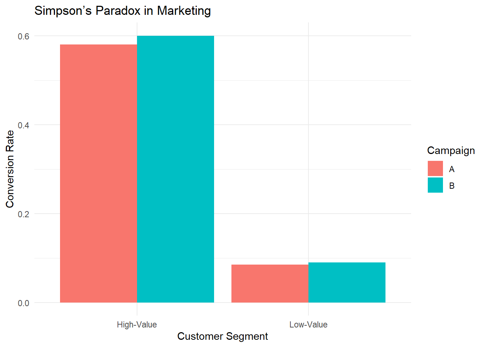
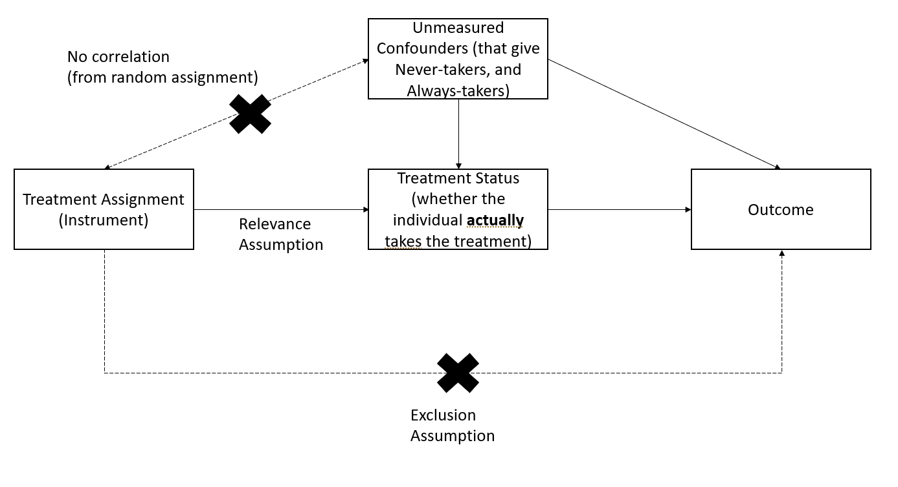

28 Causal Inference
Throughout our journey into statistical concepts, we’ve uncovered patterns, relationships, and trends in data. But now, we arrive at one of the most profound questions in all of research and decision-making: What truly causes what?
We’ve all heard the phrase.
Correlation is not causation.
Just because two things move together doesn’t mean one is pulling the strings of the other. Ice cream sales and drowning incidents both rise in the summer, but ice cream isn’t to blame.
But what exactly is causation? Let’s explore.
One of the most insightful books on this topic is The Book of Why by Judea Pearl (Pearl and Mackenzie 2018), which explains the nuances of causal reasoning beautifully. We’ll briefly visit a concise summary of key ideas from Pearl’s work, supplemented with insights from econometrics and statistics.
Understanding causal relationships is essential in research, particularly in fields like economics, finance, marketing, and medicine. While statistical methods have traditionally focused on associational reasoning, causal inference allows us to answer what-if questions and make decisions based on interventions.
However, one must be aware of the limitations of statistical methods. As discussed throughout this book, relying solely on data without incorporating domain expertise can lead to misleading conclusions. To establish causality, we often need expert judgment, prior research, and rigorous experimental design.
You may have come across amusing examples of spurious correlations, such as the famous Tyler Vigen collection, which shows absurd relationships (e.g., “the number of Nicholas Cage movies correlates with drowning accidents”). These highlight the danger of mistaking correlation for causation.
Historically, one of the earliest attempts to infer causation using regression analysis was by Yule (1899), who investigated the effect of relief policies on poverty. Unfortunately, his analysis suggested that relief policies increased poverty, a misleading conclusion due to unaccounted confounders.
For a long time, statistics was largely a causality-free discipline. The field only began addressing causation in the 1920s, when Sewall Wright introduced path analysis, a graphical approach to representing causal relationships (Wright 1920). However, it wasn’t until Judea Pearl’s Causal Revolution (1990s) that we gained a formal calculus for causation.
Pearl’s framework introduced two key innovations:
- Causal Diagrams (Directed Acyclic Graphs): a graphical representation of cause-and-effect relationships.
- A Symbolic Language, the Do-Operator (\(do(X)\)): a mathematical notation for interventions.
Traditional statistics deals with conditional probabilities:
\[ P(Y | X) \]
This formula tells us the probability of event \(Y\) occurring given that event \(X\) has occurred. In the context of observed data, \(P(Y \mid X)\) reflects the association between \(X\) and \(Y\), showing how likely \(Y\) is when \(X\) happens.
However, causal inference requires a different concept:
\[ P(Y | do(X)) \]
which describes what happens when we actively intervene and set \(X\). The crucial distinction is:
\[ P(Y | X) \neq P(Y | do(X)) \]
in general, because passively observing \(X\) is not the same as actively manipulating it.
To make causal claims, we need to answer counterfactual questions:
What would have happened if we had NOT done \(X\)?
This concept is essential in fields like policy evaluation, medicine, and business decision-making.
Pearl and Mackenzie (2018) outlines three levels of cognitive ability required for causal learning:
- Seeing: Observing associations in data.
- Doing: Understanding interventions and predicting their outcomes.
- Imagining: Reasoning about counterfactuals.
This is also known as Pearl’s Ladder of Causation that is used to describe three hierarchical levels of causal reasoning.
Each level requires more cognitive ability and data. Classical statistics operates at Level 1 (association), while causal inference enables us to reach Levels 2 and 3.
28.1 The Formal Notation of Causality
A common mistake is to define causation using ordinary conditional probability:
\[ X \text{ causes } Y \text{ if } P(Y \mid X) \ne P(Y). \]
This statement only says \(X\) and \(Y\) are associated (1st-rung). The association can arise for several reasons:
- \(X\) causes \(Y\),
- \(Y\) causes \(X\) (reverse causality),
- a common cause \(Z\) affects both \(X\) and \(Y\) (confounding), or
- conditioning on a common effect of \(X\) and \(Y\) (selection / collider bias).
Adjusting for an observed set of variables \(Z\) (that is, comparing \(P(Y \mid X, Z = z)\) across values of \(X\)) only resolves (3), and only if (a) we knew which \(Z\) to choose, (b) all relevant confounders are observed, and (c) we condition only on non-descendants of \(X\). In practice this is rarely guaranteed.
The correct causal statement separates seeing from doing. Pearl’s \(do\)-operator denotes a hypothetical intervention that sets \(X\) to a specific value, breaking any incoming arrows into \(X\). We then say \(X\) has a causal effect on \(Y\) if
\[ P(Y \mid do(X = x)) \ne P(Y \mid do(X = x')) \quad \text{for some } x \neq x', \]
which in general is not the same as \(P(Y \mid X = x) \neq P(Y \mid X = x')\).
With causal diagrams and do-calculus, we can formally express interventions and answer questions at the 2nd level (Intervention).
Pearl (2019) also introduce Pearl’s Structural Causal Model (SCM) framework for causal inference. The framework spans seven activities:
- Encoding Causal Assumptions: Using causal graphs for transparency and testability.
- Do-Calculus: Controlling for confounding using the backdoor criterion.
- Algorithmization of Counterfactuals: Modeling “what if?” scenarios.
- Mediation Analysis: Understanding direct vs. indirect effects.
- External Validity and Adaptability: Addressing selection bias and domain adaptation.
- Handling Missing Data: Using causal methods to infer missing information.
- Causal Discovery: Learning causal relationships from data using:
- d-separation
- functional decomposition (Hoyer et al. 2008)
- spontaneous local changes (Pearl 2014)
To explore causal inference in R, check out the CRAN Task View for Causal Inference:
For further reading:
- The Book of Why, by Judea Pearl (Pearl and Mackenzie 2018)
- Causal Inference in Statistics: A Primer, by Pearl, Glymour, and Jewell
- Causality: Models, Reasoning, and Inference, by Judea Pearl
28.2 Simpson’s Paradox
Simpson’s Paradox is one of the most striking examples of why causality matters and why simple statistical associations can be misleading.
At its core, Simpson’s Paradox occurs when:
A trend observed in an overall population reverses when the population is divided into subgroups.
This means that statistical associations in raw data can be misleading if important confounding variables are ignored.
Understanding Simpson’s Paradox is critical in causal inference because:
- It highlights the danger of naive data analysis: looking at overall trends alone can lead to incorrect conclusions.
- It emphasizes the importance of confounding variables, which must be controlled for before any causal claim is made.
- It demonstrates why causal reasoning is necessary, because relying on statistical associations (\(P(Y \mid X)\)) without considering structural relationships can lead to paradoxical results.
28.2.1 Comparison between Simpson’s Paradox and Omitted Variable Bias
Simpson’s Paradox occurs when a trend in an overall dataset reverses when broken into subgroups. This happens due to data aggregation issues, where differences in subgroup sizes distort the overall trend.
While this often resembles omitted variable bias (OVB), where missing confounders lead to misleading conclusions, Simpson’s Paradox is not just a causal inference problem. It is a mathematical phenomenon that can arise purely from improper weighting of data, even in descriptive statistics.
28.2.1.1 Similarities Between Simpson’s Paradox and OVB
- Both involve a missing variable:
In Simpson’s Paradox, a key confounding variable (e.g., customer segment) is hidden in the aggregate data, leading to misleading conclusions.
In OVB, a relevant variable (e.g., seasonality) is missing from the regression model, causing bias.
- Both distort causal conclusions:
OVB biases effect estimates by failing to control for confounding.
Simpson’s Paradox flips statistical relationships when controlling for a confounder.
28.2.1.2 Differences Between Simpson’s Paradox and OVB
- Not all OVB cases show Simpson’s Paradox:
OVB generally causes bias, but it doesn’t always create a reversal of trends.
Example: If seasonality increases both ad spend and sales, omitting it inflates the ad spend → sales relationship but does not necessarily reverse it.
- Simpson’s Paradox can occur even without causal inference:
Simpson’s Paradox is a mathematical/statistical phenomenon that can arise even in purely observational data, not just causal inference.
It results from data weighting issues, even if causality is not considered.
- OVB is a model specification issue; Simpson’s Paradox is a data aggregation issue:
OVB occurs in regression models when we fail to include relevant predictors.
Simpson’s Paradox arises from incorrect data aggregation when groups are not properly analyzed separately.
28.2.1.3 The Right Way to Think About It
Simpson’s Paradox is often caused by omitted variable bias, but they are not the same thing.
OVB is a problem in causal inference models; Simpson’s Paradox is a problem in raw data interpretation.
28.2.1.4 How to Fix These Issues?
For OVB: Use causal diagrams, add control variables, and use regression adjustments.
For Simpson’s Paradox: Always analyze subgroup-level trends before making conclusions based on aggregate data.
Bottom line: Simpson’s Paradox is often caused by omitted variable bias, but it is not just OVB. It is a fundamental issue of misleading data aggregation.
28.2.2 Illustrating Simpson’s Paradox: Marketing Campaign Success Rates
Let’s explore this paradox using a practical business example.
28.2.2.1 Scenario: Marketing Campaign Performance
Imagine a company running two marketing campaigns, Campaign A and Campaign B, to attract new customers. We analyze which campaign has a higher conversion rate.
28.2.2.1.1 Step 1: Creating the Data
We will simulate conversion rates for two different customer segments:
- High-Value customers (who typically convert at a higher rate)
- Low-Value customers (who convert at a lower rate).
# Load necessary libraries
library(dplyr)
# Create a dataset where:
# - B is better than A in each individual segment.
# - A turns out better when we look at the overall (aggregated) data.
marketing_data <- data.frame(
Campaign = c("A", "A", "B", "B"),
Segment = c("High-Value", "Low-Value", "High-Value", "Low-Value"),
Visitors = c(500, 2000, 300, 3000), # total visitors in each segment
Conversions = c(290, 170, 180, 270) # successful conversions
)
# Compute segment-level conversion rate
marketing_data <- marketing_data %>%
mutate(Conversion_Rate = Conversions / Visitors)
# Print the data
print(marketing_data)
#> Campaign Segment Visitors Conversions Conversion_Rate
#> 1 A High-Value 500 290 0.580
#> 2 A Low-Value 2000 170 0.085
#> 3 B High-Value 300 180 0.600
#> 4 B Low-Value 3000 270 0.09028.2.2.1.1.1 Interpreting This Data
Campaign B in the High-Value segment: \(\frac{180}{300} = 60\%\)
-
Campaign A in the High-Value segment: \(\frac{290}{500} = 58\%\)
=> B is better in the High-Value segment (60% vs 58%).
Campaign B in the Low-Value segment: \(\frac{270}{3000} = 9\%\)
-
Campaign A in the Low-Value segment: \(\frac{170}{2000} = 8.5\%\)
=> B is better in the Low-Value segment (9% vs 8.5%).
Thus, B outperforms A in each individual segment.
28.2.2.1.2 Step 2: Aggregating Data (Ignoring Customer Segments)
Now, let’s calculate the overall conversion rate for each campaign without considering customer segments.
# Compute overall conversion rates for each campaign
overall_rates <- marketing_data %>%
group_by(Campaign) %>%
summarise(
Total_Visitors = sum(Visitors),
Total_Conversions = sum(Conversions),
Overall_Conversion_Rate = Total_Conversions / Total_Visitors
)
# Print overall conversion rates
print(overall_rates)
#> # A tibble: 2 × 4
#> Campaign Total_Visitors Total_Conversions Overall_Conversion_Rate
#> <chr> <dbl> <dbl> <dbl>
#> 1 A 2500 460 0.184
#> 2 B 3300 450 0.13628.2.2.1.3 Step 3: Observing Simpson’s Paradox
Let’s determine which campaign appears to have a higher conversion rate.
# Identify the campaign with the higher overall conversion rate
best_campaign_overall <- overall_rates %>%
filter(Overall_Conversion_Rate == max(Overall_Conversion_Rate)) %>%
select(Campaign, Overall_Conversion_Rate)
print(best_campaign_overall)
#> # A tibble: 1 × 2
#> Campaign Overall_Conversion_Rate
#> <chr> <dbl>
#> 1 A 0.184Even though Campaign B is better in each segment, you should see that Campaign A has a higher aggregated (overall) conversion rate!
28.2.2.1.4 Step 4: Conversion Rates Within Customer Segments
We now analyze the conversion rates separately for high-value and low-value customers.
# Compute conversion rates by customer segment
by_segment <- marketing_data %>%
select(Campaign, Segment, Conversion_Rate) %>%
arrange(Segment)
print(by_segment)
#> Campaign Segment Conversion_Rate
#> 1 A High-Value 0.580
#> 2 B High-Value 0.600
#> 3 A Low-Value 0.085
#> 4 B Low-Value 0.090In High-Value, B > A.
In Low-Value, B > A.
Yet, overall, A > B.
This reversal is the hallmark of Simpson’s Paradox.
28.2.2.1.5 Step 5: Visualizing the Paradox
Fig. 28.1 makes this clearer by visualizing the results.
library(ggplot2)
# Plot conversion rates by campaign and segment
ggplot(marketing_data,
aes(x = Segment,
y = Conversion_Rate,
fill = Campaign)) +
geom_bar(stat = "identity", position = "dodge") +
labs(
title = "Simpson’s Paradox in Marketing",
x = "Customer Segment",
y = "Conversion Rate"
) +
theme_minimal()
Figure 28.1: Simpson’s paradox in marketing: campaign-level conversion rates appear inconsistent with segment-level rates.
This bar chart reveals that for both segments, B’s bar is taller (i.e., B’s conversion rate is higher). If you only examined segment-level data, you would conclude that B is the superior campaign.
However, if you aggregate the data (ignore segments), you get the opposite conclusion that A is better overall.
28.2.3 Why Does This Happen?
This paradox arises because of a confounding variable, in this case the distribution of visitors across segments.
Campaign A has more of its traffic in the High-Value segment (where conversions are generally high).
Campaign B has many of its visitors in the Low-Value segment.
Because the volume of Low-Value visitors in B is extremely large (3000 vs. 2000 for A), it weighs down B’s overall average more, allowing A’s overall rate to exceed B’s.
28.2.4 How Does Causal Inference Solve This?
To avoid Simpson’s Paradox, we need to move beyond association and use causal analysis:
-
Use causal diagrams (DAGs) to model relationships
The marketing campaign choice is confounded by customer segment.
We must control for the confounding variable.
-
Use stratification or regression adjustment
Instead of comparing raw conversion rates, we should compare rates within each customer segment.
This ensures that confounding factors do not distort results.
-
Use the do-operator to simulate interventions
Instead of asking \(P(\text{Conversion} \mid \text{Campaign})\), ask: \(P(\text{Conversion} \mid do(\text{Campaign}))\)
This estimates what would happen if we randomly assigned campaigns (removing confounding bias).
28.2.5 Correcting Simpson’s Paradox with Regression Adjustment
Let’s adjust for the confounding variable using logistic regression.
# Logistic regression adjusting for the Segment
model <- glm(
cbind(Conversions, Visitors - Conversions) ~ Campaign + Segment,
family = binomial(),
data = marketing_data
)
summary(model)
#>
#> Call:
#> glm(formula = cbind(Conversions, Visitors - Conversions) ~ Campaign +
#> Segment, family = binomial(), data = marketing_data)
#>
#> Coefficients:
#> Estimate Std. Error z value Pr(>|z|)
#> (Intercept) 0.32783 0.07839 4.182 2.89e-05 ***
#> CampaignB 0.06910 0.08439 0.819 0.413
#> SegmentLow-Value -2.70806 0.08982 -30.151 < 2e-16 ***
#> ---
#> Signif. codes: 0 '***' 0.001 '**' 0.01 '*' 0.05 '.' 0.1 ' ' 1
#>
#> (Dispersion parameter for binomial family taken to be 1)
#>
#> Null deviance: 977.473003 on 3 degrees of freedom
#> Residual deviance: 0.012337 on 1 degrees of freedom
#> AIC: 32.998
#>
#> Number of Fisher Scoring iterations: 3This model includes both Campaign and Segment as predictors, giving a clearer picture of the true effect of each campaign on conversion, after controlling for differences in segment composition.
28.2.6 Key Takeaways
-
Simpson’s Paradox demonstrates why causal inference is essential.
Aggregated statistics can be misleading due to hidden confounding.
Breaking data into subgroups can reverse conclusions.
-
Causal reasoning helps identify and correct paradoxes.
- Using causal graphs, do-calculus, and adjustment techniques, we can find the true causal effect.
-
Naïve data analysis can lead to bad business decisions.
- If a company allocated more budget to Campaign B based on overall conversion rates, it might be investing in the wrong strategy!
28.3 Causation Does Not Imply Variation
“Causation does not imply variation.”
John H. Cochrane, The Grumpy Economist, crediting Tyler Muir for the catchphrase.
Simpson’s paradox shows that an association can reverse once we condition on the right variable. A related and equally common confusion runs through applied econometrics: treating what causes changes at the margin as the same thing as what explains most observed variation. The mistake shows up in many forms:
- Large causal effects are dismissed as “unimportant” because the regressor explains little of the outcome variance.
- Highly predictive regressions are taken as evidence of causality, because they explain a large fraction of variance.
- Identification is conflated with variance decomposition, and the phrase “drives variation” is used as if it were causal language.
A parameter can be causal and economically large even when it explains little variation, and a covariate can explain a lot of variation even when it is not causal.
The key is that causal estimands are counterfactual objects, while variance shares are properties of realized joint distributions. These are different questions, with different inputs, and they move differently when the design or environment changes. The discussion below proceeds in four layers:
- Core probability identities: how causal effects relate to variance, and why the relation is weak without strong structure.
- Regression algebra: why identification by residualization is not the same as importance by variance contribution.
- Design-based econometrics: ATE, ATT, LATE, and why local identification can coexist with small variance shares.
- Equilibrium and interference: why variance statements are tied to a particular policy regime and can break down entirely under spillovers.
28.3.1 Two Questions That Sound Similar but Are Not
28.3.1.1 Question A: What Is the Causal Effect?
A causal estimand compares counterfactual outcomes. In the potential outcomes framework, each unit has two potential outcomes \((Y_i(1), Y_i(0))\) for binary treatment \(D_i \in \{0,1\}\). The observed outcome is
\[Y_i = D_i Y_i(1) + (1 - D_i) Y_i(0).\]
Common causal estimands include:
-
Average treatment effect (ATE):
\[\tau_{\text{ATE}} = \mathbb{E}[Y(1) - Y(0)].\]
-
Average treatment effect on the treated (ATT):
\[\tau_{\text{ATT}} = \mathbb{E}[Y(1) - Y(0)\mid D=1].\]
-
Local average treatment effect (LATE), in an instrumental variables setting with monotonicity:
\[\tau_{\text{LATE}} = \mathbb{E}[Y(1)-Y(0)\mid \text{complier}],\]
identified under the assumptions formalized in Imbens and Angrist (1994) and Angrist et al. (1996).
These objects are about counterfactual differences. They can be large even if the treatment rarely changes or moves only a little.
28.3.1.2 Question B: How Much Observed Variation Is Associated with the Regressor?
A variance share is a descriptive statement about the realized joint distribution of \((Y, D, X, \ldots)\) in a particular environment. For example, in a linear model
\[Y = \beta D + \varepsilon,\]
the contribution of the term \(\beta D\) to the variance of \(Y\) is
\[\frac{\mathrm{Var}(\beta D)}{\mathrm{Var}(Y)} = \frac{\beta^2 \mathrm{Var}(D)}{\beta^2 \mathrm{Var}(D) + \mathrm{Var}(\varepsilon) + 2\beta \, \mathrm{Cov}(D,\varepsilon)}.\]
Even if \(\beta\) is truly causal and large, the ratio can be small when \(\mathrm{Var}(D)\) is small or when other sources of variation dominate \(\mathrm{Var}(Y)\).
Conversely, a large ratio can occur because \(D\) is a proxy for omitted factors, that is, because \(\mathrm{Cov}(D,\varepsilon)\) is large, not because \(\beta\) is causal.
28.3.1.3 A Crucial Asymmetry
- Causal effects are about the counterfactual mapping \(d \mapsto Y(d)\), which is not directly observed.
- Variance shares are about the distribution of realized \((Y, D)\), which depends on institutional rules, constraints, equilibria, measurement error, selection, and policy regimes.
Thus, “causes” is a statement about the counterfactual mapping, while “explains variation” is a statement about the realized distribution. They can coincide under strong structure, but they need not.
This distinction is consistent with the design-based turn in empirical economics, which prioritizes identification and credible research designs over purely predictive regressions, as emphasized in Angrist and Pischke (2010) and Athey and Imbens (2017).
28.3.2 Why Causation Does Not Imply Variation: Probability Identities
The slogan becomes precise with the law of total variance.
Let \(D\) be a treatment, and define the conditional mean function
\[m(d) = \mathbb{E}[Y \mid D=d].\]
Then:
\[\mathrm{Var}(Y) = \mathrm{Var}(\mathbb{E}[Y\mid D]) + \mathbb{E}[\mathrm{Var}(Y\mid D)].\]
The term \(\mathrm{Var}(\mathbb{E}[Y\mid D])\) measures how much the conditional mean varies with \(D\) under the realized distribution of \(D\). It does not automatically measure a causal effect because \(m(d)\) is confounded unless \(D\) is exogenous, but even in the ideal exogenous case it depends strongly on the support and dispersion of \(D\).
28.3.2.1 Binary Treatment with an Additive Causal Effect
Assume a structural model consistent with a constant effect:
\[Y = Y(0) + \tau D,\quad \mathbb{E}[Y(0)\mid D] = \mathbb{E}[Y(0)].\]
Then
\[\mathbb{E}[Y\mid D] = \mathbb{E}[Y(0)] + \tau D,\]
so
\[\mathrm{Var}(\mathbb{E}[Y\mid D]) = \tau^2 \mathrm{Var}(D).\]
If \(D\) is rare, \(\mathrm{Var}(D) = p(1-p)\) is small. Therefore, even with very large \(\tau\), the between-group variance can be small, while \(\mathbb{E}[\mathrm{Var}(Y\mid D)]\) can dominate.
This is the simplest mathematical reason that large causal effects can imply little variation.
28.3.2.2 Continuous Treatment with Local Identification
If \(D\) is continuous and the structural model is
\[Y = g(D) + \varepsilon,\quad \mathbb{E}[\varepsilon \mid D]=0,\]
then \(\mathrm{Var}(\mathbb{E}[Y\mid D]) = \mathrm{Var}(g(D))\).
A local causal derivative \(g'(d_0)\) can be large, but \(\mathrm{Var}(g(D))\) can still be small if the realized distribution of \(D\) has narrow support near \(d_0\), or if most mass is in regions where \(g\) is flat. Causal derivatives are properties of the function, while variance shares depend on where the data live.
28.3.2.3 A Practical Implication
Any statement like “factor \(D\) is not important because it explains little of the variation in \(Y\)” is incomplete unless it specifies:
- The relevant policy counterfactual, that is, the size and direction of the contemplated shift in \(D\).
- The environment in which the variance share is computed, including the distribution of \(D\) and the presence of other shocks.
This is closely related to concerns about external validity and policy relevance, in particular that the distribution of treatment variation and effect heterogeneity differ across settings and policies; see Deaton (2010) and Heckman and Vytlacil (2001).
28.3.3 Regression Algebra: Identification Is Not Importance
Regression is the dominant language of empirical work, so the confusion often arrives through regression output.
Consider the linear model:
\[Y = \alpha + \beta D + W'\gamma + u,\]
where \(W\) is a vector of controls.
The Frisch-Waugh-Lovell theorem implies:
- Regress \(Y\) on \(W\) to get residuals \(Y^\perp\).
- Regress \(D\) on \(W\) to get residuals \(D^\perp\).
- Then \(\hat\beta\) from the full regression equals the slope from regressing \(Y^\perp\) on \(D^\perp\).
Thus, the coefficient is identified off residualized variation in \(D\), not the total variation in \(D\). The amount of variation in \(D^\perp\) can be tiny even when the effect is large.
This is the backbone of a common applied phenomenon: credible designs deliberately strip away most variation to isolate quasi-random variation.
Design-based work often uses:
- fixed effects,
- narrow windows around discontinuities,
- event studies,
- instruments that move treatment only for a subset.
These designs can be excellent for identification but necessarily restrict the relevant variation.
28.3.3.1 Incremental Variance and Partial R-Squared
A standard importance metric in linear models is the partial \(R^2\) of \(D\) conditional on \(W\).
It is the squared correlation between \(Y^\perp\) and \(D^\perp\):
\[R^2_{Y,D\mid W} = \mathrm{Corr}(Y^\perp, D^\perp)^2.\]
This can be written in several equivalent ways, including:
\[R^2_{Y,D\mid W} = \frac{R^2_{\text{full}} - R^2_{\text{restricted}}}{1 - R^2_{\text{restricted}}}.\]
Even when \(\beta\) is large, \(R^2_{Y,D\mid W}\) can be small if:
- \(D^\perp\) has small variance,
- \(u\) has large variance,
- the causal effect is heterogeneous and averages out,
- measurement error inflates noise.
This is a mechanical point, not a claim about policy importance.
The distinction between causal magnitude and variance explanation is explicit in discussions of credibility and sensitivity analysis; see Leamer (1983), Oster (2019), and Cinelli and Hazlett (2020).
28.3.3.2 Predictive Power Can Be Noncausal
A high partial \(R^2\) can arise because \(D^\perp\) remains correlated with unobservables.
This is the classic omitted variable bias logic: if the true model is
\[Y = \beta D + \delta U + \varepsilon,\]
but \(U\) is omitted and correlated with \(D\), then the regression of \(Y\) on \(D\) is predictive and may have high \(R^2\), even if the causal effect \(\beta\) is zero.
Therefore:
- “Explains variance” can reflect confounding, selection, or reverse causality.
- “Identified causal effect” can be large while “explains little variance”.
28.3.4 Local Identification and Small Variance: IV, LATE, and Marginal Policies
Instrumental variables is a clean arena in which to see the difference.
28.3.4.1 LATE Is Causal but Local
With an instrument \(Z\) that shifts treatment take-up, LATE is a causal effect for compliers under the conditions in Imbens and Angrist (1994) and Angrist et al. (1996). A key feature is that the instrument may change treatment status for only a small subset of the population.
In such cases:
- The causal effect on compliers can be large.
- The variance of realized treatment induced by the instrument can be small.
- The share of total outcome variance attributable to treatment changes induced by the instrument can be tiny.
Yet policy relevance can still be high if the policy change resembles the instrument, or if scaling up is feasible, or if welfare weights prioritize the complier population. The mapping from an estimand to a policy counterfactual is a separate step, central to discussions of policy-relevant treatment effects; see Heckman and Vytlacil (2001) and Heckman and Vytlacil (2005).
28.3.4.2 Weak Instruments and Variation
Weak instruments are sometimes described as “not enough variation”. The deeper point is that the first stage is weak, so the design provides little information about the causal effect. But again, the object of interest is the parameter, not the variance share.
A strong first stage increases precision, not necessarily importance. A policy can be causally potent even when realized treatment variation is small.
28.3.5 Equilibrium, Interference, and the Limits of Variance Statements
A further reason the slogan matters is that the mapping from \(D\) to \(Y\) can depend on general equilibrium and interference.
28.3.5.1 Policy Changes Can Shift the Whole System
In macroeconomics and many market settings, the effect of a policy intervention depends on expectations, constraints, and equilibrium adjustments. The Lucas critique formalizes why policy evaluation based on historical correlations can fail when agents change behavior under a new policy rule (Lucas 1976).
A covariance or variance decomposition computed from historical data is a property of one policy regime. It can be irrelevant for a new regime, even if the causal mechanism is real.
28.3.5.2 Interference Breaks Unit-Level Variance Logic
The potential outcomes framework is often introduced with SUTVA, including no interference. When interference exists, one unit’s outcome depends on other units’ treatments, and unit-level decompositions become misleading. Chapter 30 develops this problem in depth.
Formal frameworks for interference in experiments are developed in Hudgens and Halloran (2008), and applied perspectives appear in Sobel (2006). A canonical development economics example where treatment externalities matter is the deworming study of Miguel and Kremer (2004).
Even defining “the variance contribution of \(D\)” can be ill posed when \(D\) enters through network effects or spillovers.
28.3.6 A Reporting Standard: Separate Effect Size, Identification, and Variance
A production standard for empirical writing is to report three distinct objects, plus an optional descriptive fourth:
- Estimand: the causal parameter, for example ATE, ATT, LATE, or a policy-relevant treatment effect.
- Identification: the design and assumptions that link observed data to that estimand.
- Magnitude: effect sizes in interpretable units, plus robustness and uncertainty.
- Variation (optional and clearly labeled): a descriptive decomposition, for example partial \(R^2\) or a variance share, computed under the realized distribution.
Conflation occurs when item 4 is used as if it were item 3, or when item 4 is used as if it were item 1.
Two articles that articulate the discipline-wide movement toward explicit identification and design-based credibility are Angrist and Pischke (2010) and Athey and Imbens (2017). Concerns about the relationship between identification, external validity, and policy relevance, especially in development settings, are central in Deaton (2010).
28.3.7 Demonstrations
28.3.7.1 Example 1: Large Causal Effect, Little Variance Explained
A rare treatment can have a large effect, but explain little variance in the outcome.
set.seed(123)
n <- 200000
p <- 0.01
tau <- 10
D <- rbinom(n, 1, p)
eps <- rnorm(n, mean = 0, sd = 10)
Y <- tau * D + eps
var_share <- var(tau * D) / var(Y)
tibble(
treatment_rate = mean(D),
tau = tau,
var_Y = var(Y),
var_tauD = var(tau * D),
variance_share_tauD = var_share
)
#> # A tibble: 1 × 5
#> treatment_rate tau var_Y var_tauD variance_share_tauD
#> <dbl> <dbl> <dbl> <dbl> <dbl>
#> 1 0.0103 10 101. 1.02 0.0101A regression recovers the causal effect, but the variance share can be small.
m <- lm(Y ~ D)
tidy(m)
#> # A tibble: 2 × 5
#> term estimate std.error statistic p.value
#> <chr> <dbl> <dbl> <dbl> <dbl>
#> 1 (Intercept) 0.0273 0.0225 1.21 0.226
#> 2 D 9.60 0.221 43.4 0A useful reporting pair is:
- effect size: \(\hat\tau\)
- descriptive share: \(\mathrm{Var}(\hat\tau D) / \mathrm{Var}(Y)\)
These address different questions.
28.3.7.2 Example 2: Large Variance Explained, No Causal Effect
Now construct a confounded system where \(D\) is predictive but not causal.
set.seed(456)
n <- 200000
U <- rnorm(n)
# Outcome depends on U, treatment depends on U
Y <- 2 * U + rnorm(n, sd = 1)
D <- 2 * U + rnorm(n, sd = 1)
m_bad <- lm(Y ~ D)
summary(m_bad)$coef
#> Estimate Std. Error t value Pr(>|t|)
#> (Intercept) 9.770768e-05 0.003000172 0.03256736 0.9740196
#> D 8.016231e-01 0.001336013 600.01158683 0.0000000
summary(m_bad)$r.squared
#> [1] 0.6428683The regression can be highly predictive, but the causal effect of intervening on \(D\) is zero by construction, because \(D\) does not enter the outcome equation. This is the archetype of why variance explanation is not causation.
A control that blocks the confounder fixes the bias:
m_good <- lm(Y ~ D + U)
summary(m_good)$coef
#> Estimate Std. Error t value Pr(>|t|)
#> (Intercept) -0.0007137069 0.002236573 -0.3191074 0.7496454
#> D 0.0007657940 0.002236870 0.3423508 0.7320873
#> U 1.9973039708 0.004995157 399.8480644 0.0000000The coefficient on \(D\) collapses toward zero once the confounder is controlled.
This illustrates the core asymmetry:
- Predictive variation can come from shared drivers, not causal pathways.
- Causal effects can be large while predictive variation is small.
28.3.7.3 Example 3: Partial R-Squared in Practice
Compute the partial \(R^2\) of \(D\) controlling for \(U\).
partial_r2 <- function(full, restricted) {
r2_full <- summary(full)$r.squared
r2_rest <- summary(restricted)$r.squared
(r2_full - r2_rest) / (1 - r2_rest)
}
full <- lm(Y ~ D + U)
rest <- lm(Y ~ U)
partial_r2(full, rest)
#> [1] 5.860287e-07In applied work, partial \(R^2\) is useful as a descriptive metric, and it is also central in sensitivity analysis frameworks; see Cinelli and Hazlett (2020) and Oster (2019). It is not a substitute for a causal estimand.
28.3.7.4 Example 4: IV and Local Variation
Construct a simple IV design where the instrument moves treatment for only a small group.
set.seed(789)
n <- 200000
Z <- rbinom(n, 1, 0.5)
# Compliance is rare: only a small subset changes D when Z changes
complier <- rbinom(n, 1, 0.05)
D <- ifelse(complier == 1, Z, 0)
tau <- 8
Y <- tau * D + rnorm(n, sd = 10)
ols <- lm(Y ~ D)
iv <- ivreg(Y ~ D | Z)
tibble(
estimand = c("OLS", "2SLS"),
estimate = c(coef(ols)[["D"]], coef(iv)[["D"]])
)
#> # A tibble: 2 × 2
#> estimand estimate
#> <chr> <dbl>
#> 1 OLS 8.16
#> 2 2SLS 7.95Compute how much outcome variance is mechanically attributable to the treatment term under this realized distribution.
var_share_iv <- var(tau * D) / var(Y)
tibble(
mean_D = mean(D),
var_D = var(D),
var_share_tauD = var_share_iv
)
#> # A tibble: 1 × 3
#> mean_D var_D var_share_tauD
#> <dbl> <dbl> <dbl>
#> 1 0.0252 0.0246 0.0155Even though the causal effect is large and identified by design, the induced treatment variation can be small and the variance share can be tiny. This is normal in LATE settings.
The broader lesson is that identification strategies often focus on narrow movements that are informative about causality. This can reduce variance contributions without reducing causal importance.
28.3.7.5 Example 5: Fixed Effects, Residualized Variation, and Small Within Variance
Fixed effects regressions identify effects from within-unit variation. If within-unit variation is limited, the effect can be identified while the within component explains little of total variance.
set.seed(1011)
n_id <- 2000
t_per <- 10
n <- n_id * t_per
id <- rep(seq_len(n_id), each = t_per)
alpha_i <- rnorm(n_id, sd = 5)
alpha <- alpha_i[id]
# Treatment changes rarely within id
D <- rbinom(n, 1, 0.05) * rbinom(n, 1, 0.2) # sparse and sporadic
tau <- 3
Y <- alpha + tau * D + rnorm(n, sd = 10)
fe <- feols(Y ~ D | id, data = data.frame(Y, D, id))
coef(fe)
#> D
#> 1.829679Compute variance shares in two ways:
- Total variance share of \(\hat\tau D\) in \(Y\).
- Within variance share using residualized variables.
dat <- data.frame(Y, D, id)
# Total share
tau_hat <- coef(fe)[["D"]]
share_total <- var(tau_hat * dat$D) / var(dat$Y)
# Within share: residualize Y and D on id fixed effects
Y_within <- resid(feols(Y ~ 1 | id, data = dat))
D_within <- resid(feols(D ~ 1 | id, data = dat))
share_within <- var(tau_hat * D_within) / var(Y_within)
tibble(
tau_hat = tau_hat,
share_total = share_total,
share_within = share_within,
var_D_total = var(dat$D),
var_D_within = var(D_within)
)
#> # A tibble: 1 × 5
#> tau_hat share_total share_within var_D_total var_D_within
#> <dbl> <dbl> <dbl> <dbl> <dbl>
#> 1 1.83 0.000227 0.000285 0.00858 0.00777The within variation can be tiny even when the causal effect is estimable.
28.3.8 The Causal R-Squared
Everything above is diagnostic: it explains why a variance share is not a causal quantity, and why partial \(R^2\) should be labeled as description rather than importance. It does not yet give a statistic that answers the variance question causally. Stratton and Thor (2026) propose one, the causal \(R^2\) (CR2), and it is the cleanest available answer to the question “how much of the observed variation in \(Y\) does \(X\) causally explain?”
The distinction matters because the two questions have different audiences. A causal effect answers a forward looking policy question: if we changed \(X\), how would \(Y\) move? A causal \(R^2\) answers a backward looking explanatory question: of the variation in \(Y\) we actually observe, how much was generated by \(X\)? A doctor advising a patient to cut salt needs the first. A researcher asking why blood pressure varies across a population needs the second.
28.3.8.1 From Predictive Fit to Causal Fit
Work in the Rubin causal model. Let \(X = (X_1, \dots, X_k)\) collect the features that are observed and manipulable, and \(U\) the features that are not observed. The potential outcome function \(f\) maps the full feature vector to the outcome, \(Y = f(X, U)\).
A model is any function \(m\) of the observed features. Its risk is quadratic loss,
\[\mathcal{R}(m) = \mathbb{E}\big[(m(X) - f(X,U))^2\big].\]
The risk minimizing model without any constraint is the conditional expectation function,
\[\mu_P(x) = \mathbb{E}[Y \mid X = x],\]
which is the best predictive model. Its fit is the familiar nonparametric \(R^2\).
A causal model is constrained so that modelled differences match average causal effects: \(m\) is causal if for all \(x, x'\),
\[m(x') - m(x) = \mathbb{E}[f(x', U)] - \mathbb{E}[f(x, U)].\]
The constraint is the whole point. A predictive model is free to let \(m(x)\) move with \(x\) for any reason, including confounding. A causal model may only let it move by the average treatment effect.
Minimizing risk subject to that constraint gives the best causal model, and it has a simple closed form: it is the average potential outcome function, recentered so that the model is calibrated to the population mean of the outcome,
\[\mu_C(x) = \mathbb{E}[f(x, U)] + \Big(\mathbb{E}[Y] - \mathbb{E}\big[\mathbb{E}[f(X,U)]\big]\Big).\]
Define the fit of any model as its proportional reduction in risk relative to the constant baseline \(\mathbb{E}[Y]\), whose risk is \(\operatorname{Var}[Y]\):
\[\nu(m) = \frac{\operatorname{Var}[Y] - \mathcal{R}(m)}{\operatorname{Var}[Y]}.\]
Then \(R^2 = \nu(\mu_P)\) and the causal \(R^2\) is the fit of the best causal model,
\[CR^2 = \nu(\mu_C) = 1 - \frac{\mathcal{R}(\mu_C)}{\operatorname{Var}[Y]}.\]
Three readings make the interpretation precise:
- Residual share. The \(R^2\) compares residuals from \(\mu_P\) to the variance of \(Y\). The \(CR^2\) does the same with residuals from \(\mu_C\), so it is one minus the fraction of variance causally unexplained.
- Variance reduction. Consider a policy that compensates each unit for the part of its outcome caused by \(X\), so that unit \(i\) ends up with \(\tilde Y_i = Y_i - \mu_C(X_i)\). The \(CR^2\) is the proportional fall in outcome variance from that thought experiment. This is what makes it usable for inequality questions: it says how much of the dispersion would disappear if \(X\) stopped causing outcomes.
- Sole cause benchmark. If \(X\) were the only cause of \(Y\), unit \(i\) would sit exactly at \(\mu_C(X_i)\). The residual measures the part of the outcome that other causes must account for.
28.3.8.2 Why This Is Not the Experimental R-Squared
The natural shortcut is to run the experiment and report its \(R^2\). That is the wrong number, and understanding why is the key to the whole construction.
| Quantity | Identifies the causal effect? | Uses the population distribution of \((Y,X)\)? |
|---|---|---|
| Observational \(R^2\) | No | Yes |
| Experimental \(R^2\) | Yes | No |
| \(CR^2\) | Yes | Yes |
Observational data pin down the joint law of \((Y, X)\) but cannot separate the causal effect from confounding. Experimental data pin down the causal effect but not the population share explained, for two reasons. Treatment shares in an experiment are chosen to maximize precision, not to match the population, and in the experiment \(X\) is independent of \(U\) by construction, whereas in the population they covary. The experimental \(R^2\) is therefore the share explained in the experiment, which is a different object.
The \(CR^2\) takes the causal effect from the experiment and evaluates its fit against the observational distribution.
28.3.8.3 Properties
The following hold for any function class, and are what license the “share of variance causally explained” reading:
- If \(X\) has no causal effect on \(Y\), then \(CR^2 = 0\). The predictive \(R^2\) fails this.
- If \(X\) does not vary in the population, then \(CR^2 = 0\), however large the effect.
- If \(X\) fully determines \(Y\) and the model class is well specified, then \(CR^2 = 1\).
- Adding independent noise to the outcome attenuates \(CR^2\) toward zero.
- \(CR^2\) is not symmetric in \(Y\) and \(X\), which is as it should be for a causal quantity. The \(R^2\) is symmetric.
- \(CR^2\) is invariant to affine transformations of the outcome and monotone transformations of the features, so it does not depend on units.
Two comparisons deserve emphasis.
First, the predictive \(R^2\) weakly dominates:
\[CR^2(\mathcal{F}) \le R^2(\mathcal{F}),\]
with equality when observables are independent of unobservables. This is immediately useful in applied work. The best causal model solves the same minimization as the best predictive model under an extra constraint, so it cannot fit better. That gives a free upper bound: if a variable has negligible predictive power, it cannot have meaningful causal explanatory power, and you can say so without running any experiment.
Second, unlike \(R^2\), the causal \(R^2\) can be negative and is not monotone in the set of observed features. Negativity arises when \(X\) suppresses rather than creates variance in \(Y\). The intuition matches the familiar result in Kitagawa Oaxaca Blinder decompositions, where the share of the gender wage gap “explained” by college can be negative because women complete college at higher rates while college predicts higher wages. Non monotonicity follows: with no features observed \(CR^2\) is zero, and adding a suppressing feature can push it below zero.
28.3.8.4 The Linear Case and a Summary Statistics Formula
Most applied work fits linear models. Define \(CR^2_{\text{lin}}\) as the fit of the linear best causal model, which replaces the observational OLS coefficients with their experimental counterparts. Writing \(\beta_P\) for observational slopes, \(\beta_C\) for experimental slopes, and \(\Sigma\) for the observational covariance matrix of the features, the two fits differ by a quadratic form:
\[CR^2_{\text{lin}} = R^2_{\text{lin}} - \frac{1}{\operatorname{Var}[Y]}(\beta_P - \beta_C)^{\top} \Sigma (\beta_P - \beta_C).\]
With a single feature this collapses to
\[CR^2_{\text{lin}} = R^2_{\text{lin}} - \frac{\operatorname{Var}[X]}{\operatorname{Var}[Y]}(\beta_P - \beta_C)^2.\]
The gap between predictive and causal fit is the squared gap between the observational and experimental slopes, scaled by the observational variance ratio. Two consequences follow. The gap is exactly a measure of omitted variable bias expressed in fit units, and, because every term is a summary statistic, \(CR^2_{\text{lin}}\) can be computed from published tables without access to microdata. That is what makes the measure deployable on an existing literature rather than only on new studies.
28.3.8.5 Identification and Estimation
Neither sample alone suffices. An observational sample alone never identifies \(CR^2\), and neither does an experimental sample alone. Combining them identifies the nonparametric \(CR^2\) if and only if the experiment has full support over the values of \(X\), and identifies the linear \(CR^2\) if and only if the experiment independently manipulates each feature (full rank). Full support is demanding, so in practice the linear version is the workhorse.
The plug in estimator is three steps:
- Regress \(Y\) on \(X\) in the experimental sample to get the causal slopes.
- Recenter to the observational data, so that the causal model is calibrated to the observational mean of \(Y\).
- Compute the mean squared residual of that model in the observational sample and divide by the observational variance of \(Y\).
The estimator is consistent as the sample grows. Note the direction of its finite sample bias: estimation error in the causal model inflates that model’s risk, so \(\widehat{CR^2}\) is biased downward. This is the opposite of the \(R^2\), which is biased upward by overfitting. Inference follows from the delta method in the linear one feature case, or from a bootstrap that resamples the observational and experimental samples separately and recomputes the statistic.
# Plug-in estimator for the linear causal R-squared.
#
# y_obs, x_obs : outcome and features in the observational sample
# y_exp, x_exp : outcome and features in the experimental sample
#
# Returns the observational R-squared, the experimental R-squared, and CR2.
cr2_linear <- function(y_obs, x_obs, y_exp, x_exp) {
x_obs <- as.matrix(x_obs)
x_exp <- as.matrix(x_exp)
# Best predictive model: OLS in the observational sample.
coef_p <- qr.solve(cbind(1, x_obs), y_obs)
beta_p <- coef_p[-1]
mu_p <- as.vector(cbind(1, x_obs) %*% coef_p)
# Causal slopes: OLS in the experimental sample.
coef_c <- qr.solve(cbind(1, x_exp), y_exp)
beta_c <- coef_c[-1]
# Best causal model: causal slopes, recentered so that the model is
# calibrated to the observational mean of the outcome.
ybar <- mean(y_obs)
xbar <- colMeans(x_obs)
mu_c <- ybar + as.vector(sweep(x_obs, 2, xbar) %*% beta_c)
var_y <- mean((y_obs - ybar)^2)
mse_p <- mean((y_obs - mu_p)^2)
mse_c <- mean((y_obs - mu_c)^2)
# Fit of the causal model inside the experiment, for contrast.
fit_e <- as.vector(cbind(1, x_exp) %*% coef_c)
var_ye <- mean((y_exp - mean(y_exp))^2)
exp_r2 <- 1 - mean((y_exp - fit_e)^2) / var_ye
list(
r2 = 1 - mse_p / var_y,
exp_r2 = exp_r2,
cr2 = 1 - mse_c / var_y,
beta_p = beta_p,
beta_c = beta_c,
var_y = var_y,
mse_p = mse_p,
mse_c = mse_c
)
}
# Bootstrap: resample the two samples separately, recompute, summarise.
cr2_boot <- function(y_obs, x_obs, y_exp, x_exp, B = 500) {
n_o <- length(y_obs)
n_e <- length(y_exp)
x_obs <- as.matrix(x_obs)
x_exp <- as.matrix(x_exp)
draws <- replicate(B, {
i <- sample.int(n_o, n_o, replace = TRUE)
j <- sample.int(n_e, n_e, replace = TRUE)
cr2_linear(y_obs[i], x_obs[i, , drop = FALSE],
y_exp[j], x_exp[j, , drop = FALSE])$cr2
})
c(se = sd(draws),
lo = unname(quantile(draws, 0.025)),
hi = unname(quantile(draws, 0.975)))
}28.3.8.6 Simulation: Predictive Power Without Any Causal Explanation
The sharpest test of the measure is a design where the observed feature has exactly zero causal effect but arbitrary predictive power. Let \(X_2\) be unobserved, let \(Y = X_2\), and let the observed \(X_1\) be correlated with \(X_2\) at rate \(\rho\) while causing nothing. The truth is \(R^2 = \rho^2\) and \(CR^2 = 0\) for every \(\rho\).
set.seed(1)
sim_confounded <- function(rho, n_obs = 1200, n_exp = 800) {
# Observational sample: X1 and X2 are correlated, Y is caused only by X2.
x1 <- rnorm(n_obs)
x2 <- rho * x1 + sqrt(1 - rho^2) * rnorm(n_obs)
y_obs <- x2
# Experiment: X1 is randomized, so it is independent of X2.
x1_e <- rbinom(n_exp, 1, 0.5)
y_exp <- rnorm(n_exp)
out <- cr2_linear(y_obs, x1, y_exp, x1_e)
c(rho = rho, r2 = out$r2, cr2 = out$cr2)
}
rho_grid <- seq(-0.8, 0.8, by = 0.2)
sim1 <- t(sapply(rho_grid, function(r) rowMeans(replicate(50, sim_confounded(r)))))
round(as.data.frame(sim1), 3)
#> rho r2 cr2
#> 1 -0.8 0.642 0.017
#> 2 -0.6 0.363 -0.003
#> 3 -0.4 0.156 -0.007
#> 4 -0.2 0.042 0.000
#> 5 0.0 0.001 -0.005
#> 6 0.2 0.040 -0.002
#> 7 0.4 0.163 -0.007
#> 8 0.6 0.357 0.007
#> 9 0.8 0.643 0.000The predictive \(R^2\) tracks \(\rho^2\) and reaches roughly 0.64 at the ends of the grid. The causal \(R^2\) sits at zero throughout, up to sampling noise. A researcher reporting the \(R^2\) here would claim to have explained most of the variance in an outcome that the regressor does not affect at all.
28.3.8.7 Simulation: Negative and Non-Monotone Fit
Now let the causal effect be genuinely negative while selection makes the observed association positive. Smaller classes causally raise scores, but weaker students are placed into them.
set.seed(2)
n_obs <- 4000
n_exp <- 4000
beta_c_true <- -0.1 # true causal effect of class size on scores
# Observational sample: selection makes the predictive slope positive.
class_size <- rnorm(n_obs)
u <- 1.1 * class_size + rnorm(n_obs)
score <- beta_c_true * class_size + u
# Experiment: class size is randomized, so U is independent of it.
cs_exp <- rnorm(n_exp)
score_exp <- beta_c_true * cs_exp + rnorm(n_exp)
neg <- cr2_linear(score, class_size, score_exp, cs_exp)
round(data.frame(
slope_observational = neg$beta_p,
slope_causal = neg$beta_c,
r2 = neg$r2,
cr2 = neg$cr2
), 3)
#> slope_observational slope_causal r2 cr2
#> 1 1.008 -0.132 0.51 -0.143The predictive \(R^2\) is about 0.5 and the causal \(R^2\) is negative. Class size predicts half the variance in scores while causally explaining a negative share, because it suppresses rather than generates dispersion. No transformation of the \(R^2\) can produce this, which is precisely why the negativity is a feature rather than a defect: a measure forced to lie in \([0,1]\) cannot represent suppression.
The summary statistics identity holds exactly:
28.3.8.8 Replication: The Three Applications
Stratton and Thor (2026) report three applications. Because the linear \(CR^2\) is a function of variances and mean squared errors, each headline number can be reproduced exactly from the published tables. The following reconstructs all three.
apps <- data.frame(
application = c("Springs (E. coli)", "Springs (E. coli)",
"STAR reading", "STAR reading",
"STAR math", "STAR math",
"Blood pressure, pooled", "Blood pressure, men",
"Blood pressure, women"),
sample = c("observational", "experimental",
"observational", "experimental",
"observational", "experimental",
"observational", "observational", "observational"),
var_y = c(4.88, 4.46, 146.15, 112.89, 82.52, 73.29,
286.38, 255.74, 305.06),
mse_pred = c(4.08, NA, 135.02, NA, 78.71, NA,
271.61, 237.86, 299.63),
mse_causal = c(4.13, 3.98, 142.18, 111.74, 80.88, 72.56,
271.75, 238.13, 302.73)
)
apps$r2 <- round(100 * (1 - apps$mse_pred / apps$var_y), 2)
apps$cr2 <- round(100 * (1 - apps$mse_causal / apps$var_y), 2)
apps[, c("application", "sample", "r2", "cr2")]
#> application sample r2 cr2
#> 1 Springs (E. coli) observational 16.39 15.37
#> 2 Springs (E. coli) experimental NA 10.76
#> 3 STAR reading observational 7.62 2.72
#> 4 STAR reading experimental NA 1.02
#> 5 STAR math observational 4.62 1.99
#> 6 STAR math experimental NA 1.00
#> 7 Blood pressure, pooled observational 5.16 5.11
#> 8 Blood pressure, men observational 6.99 6.89
#> 9 Blood pressure, women observational 1.78 0.76Spring protection in Kenya uses the randomized evaluation of Kremer et al. (2011) for the causal effect and nearby unprotected springs as the observational sample. The observational \(R^2\) is 16.4 percent and the \(CR^2\) is 15.4 percent, while the experimental \(R^2\) is only 10.8 percent, which shows concretely that the experimental fit is not the population share. Because E. coli measurement is noisy, dividing by the test retest reliability of 0.46 converts these into signal shares.
reliability <- 0.46
round(c(signal_r2 = (1 - 4.08 / 4.88) / reliability,
signal_cr2 = (1 - 4.13 / 4.88) / reliability), 3)
#> signal_r2 signal_cr2
#> 0.356 0.334Spring protection causally explains about a third of the variation in water quality. This is a large \(CR^2\), and it supports a genuinely explanatory claim: differences in spring protection are a main cause of why some Kenyan communities have cleaner water than others. That is a different claim from the one in Kremer et al. (2011), which reports the effect of expanding protection.
Project STAR uses the class size randomization for the causal effect, following the two stage least squares design of Krueger (1999), with matched non participating Tennessee schools as the observational sample. Class size predicts 7.6 percent of the variance in reading scores but causally explains only 2.7 percent, and 4.6 versus 2.0 percent for math. The observational slope is roughly five times the causal effect, so most of the apparent predictive power of class size is omitted variable bias. Class size has a real causal effect and is nonetheless a poor explanation of why test scores differ.
Sodium and blood pressure uses the DASH Sodium trial of Sacks et al. (2001) for the causal effect and the UK National Diet and Nutrition Survey as the observational sample. Sodium causally explains 5.1 percent of variation in systolic blood pressure overall, 6.9 percent among men, and 0.8 percent among women. The striking part is that the causal effect of sodium is, if anything, slightly larger for women. Three things drive the gap: the variance of sodium intake is about 40 percent larger among men, the variance of blood pressure is about 20 percent smaller among men, and among women the causal effect is around 80 percent larger than the observational slope, meaning sodium is negatively related to unobserved determinants of blood pressure.
This last application is the cleanest illustration of why the measure earns its keep. Identical causal effects, radically different explanatory shares. A clinician advising patients should treat men and women similarly, because the effect is similar. A researcher asking why blood pressure varies should not look to sodium in women.
28.3.8.9 External Validity
The construction assumes the experiment samples from the same population whose variance is being decomposed. In practice many designs recover a local effect: an instrumental variables design identifies a LATE among compliers, not an ATE. Using it in a \(CR^2\) requires a transportability assumption, namely that causal effects in the experimental subpopulation coincide with those in the population.
This is the familiar problem of generalizing a LATE, and the standard toolkit applies. Compare observable characteristics of the experimental and target populations, using the weighting result in Abadie (2003) to recover the distribution of complier covariates. If they differ, compute covariate specific local effects and reweight to the target population. The STAR application above is the good case: compliance was high and compliers resemble the wider population on gender, race, and free lunch receipt.
Report the transportability argument explicitly. A \(CR^2\) built on a narrow complier population is a statement about that population, not about the variance you actually decomposed.
28.3.8.10 What the Causal R-Squared Is Not
It is a measure of explanation, not a guide to policy counterfactuals. A small \(CR^2\) does not mean an intervention is not worth doing. Class size causally explains little of the variance in test scores, yet reducing class sizes may still be good policy if the effect per dollar is favorable. The two questions come apart whenever a variable has a real effect but little dispersion, which is exactly the case this section has been building toward.
It also inherits every assumption used to identify the causal effect in the first place. The \(CR^2\) is not a robustness check on identification. It presumes identification and then asks a second question.
Related but distinct measures already appear in this book. Oster (2019) and Cinelli and Hazlett (2020) use the predictive \(R^2\) to bound omitted variable bias, and Fudenberg et al. (2022) measure the completeness of models by comparing theory constrained and unconstrained fit. The \(CR^2\) is closest in spirit to the latter, since it is the fit of a model constrained to be causal.
28.3.8.11 A Reporting Standard
If you want to make a claim about how much a variable explains, the recommendation is:
- Report the causal effect and its identification argument first. Nothing else is interpretable without it.
- Report the predictive \(R^2\) or partial \(R^2\) and label it as description. It is an upper bound on the causal share.
- If you have both experimental and observational variation from the same population, report the \(CR^2\) with a bootstrap interval, and state the transportability assumption.
- If you have only summary statistics from a published study, the linear formula still applies. Report the implied \(CR^2\) and say which slopes you used.
- Never present an experimental \(R^2\) as a population share explained.
28.3.9 Field-Level Evidence: Bigger Data, Tinier Results
The reporting standard above is not an abstract worry. There is direct evidence that explanatory power in an entire empirical literature has been collapsing while statistical significance has held steady.
Johannesson et al. (2024) make the measurement point: the \(t\) statistic on a key independent variable is close to uninformative about how much that variable explains, because it scales with the square root of the sample size. Two studies can report identical \(t\) statistics while one explains a percent of the outcome variance and the other explains a thousandth of a percent.
In a working paper, Hand (2026) takes that observation to the time series of a field. Sampling two papers per year from 1995 to 2024 in each of four leading accounting journals, he documents three facts that fit together mechanically:
- The number of observations in the typical study rose by a factor of roughly 60.
- The mean absolute \(t\) statistic on a key independent variable stayed statistically unchanged, at about 3.1.
- The explanatory power of the typical key independent variable fell by a factor of roughly 50, from about 1.8 percent in 1995 to about 0.04 percent in 2024.
The three facts are not independent. Holding the \(t\) statistic fixed while multiplying the sample size by 60 forces the explained share down: significance is being purchased with observations rather than earned with effect magnitude. He attributes the drift to a combination of p-hacking (see Section ??), a shift toward narrower questions, and designs, particularly difference in differences, applied where their assumptions are strained.
The lesson generalizes past accounting. Any literature that screens on statistical significance while sample sizes grow will drift toward tinier explained shares, because the screen is on a statistic that mechanically loosens as \(n\) grows. This is the practical reason to report a magnitude alongside every significance test, and, where the design allows it, a causal share rather than a predictive one.
28.3.10 Applied Interpretation: What to Say and What Not to Say
Acceptable statements:
- “The estimated causal effect is large in level terms, but the policy variable moves rarely in this sample, so it accounts for little of the observed outcome variance.”
- “The instrument identifies a LATE for compliers; compliers represent a small share of the population, so variance explained by induced treatment variation is limited, even though the causal effect is economically meaningful.”
- “The covariate is highly predictive, but the design does not justify a causal interpretation.”
These statements separate causal meaning from distributional descriptives.
Statements that should not appear in a research paper:
- “Variable \(D\) is not important because it explains little variation.”
- “Because \(R^2\) is high, the relationship is causal.”
- “Most of the variation is driven by \(D\), therefore \(D\) is the main cause.”
These statements confuse counterfactual causality with realized variance.
28.3.11 Connection to Policy Evaluation and External Validity
The confusion often becomes acute when moving from an identified parameter to a policy recommendation.
- Causal identification typically delivers a parameter for a particular environment and a particular kind of marginal variation.
- Policy analysis requires mapping that parameter to a contemplated intervention, often with different equilibrium responses.
This is precisely why econometric policy evaluation emphasizes policy invariance concerns (Lucas 1976), and why development debates stress mechanisms and transportability (Deaton 2010).
The same parameter can have:
- little realized variance share historically, but large welfare impact under a feasible counterfactual, or
- a large realized variance share historically, but little policy relevance if the relationship is not invariant.
28.3.12 Checklist for Writing
A robust write-up can follow this checklist.
Define the estimand: ATE, ATT, LATE, or a clearly defined causal derivative.
State the identification assumptions: random assignment, conditional ignorability, exclusion restriction and monotonicity, parallel trends, or other design-specific conditions.
Name the identifying variation: within-unit timing, discontinuity, instrument-induced take-up, policy shocks, or experimental assignment.
Report effect sizes in natural units: levels, percent changes, elasticities, or welfare metrics.
Report uncertainty: standard errors, confidence intervals, and sensitivity analysis when relevant; see Oster (2019) and Cinelli and Hazlett (2020).
-
If reporting variance shares, label them as descriptive:
- report \(\mathrm{Var}(\hat\beta D^\perp) / \mathrm{Var}(Y^\perp)\) for the design-relevant residualized variables,
- report the underlying dispersion of \(D^\perp\),
- do not interpret variance shares as causal importance.
28.4 Experimental vs. Quasi-Experimental Designs
To determine whether a particular intervention or treatment causes an observed outcome, it requires more than observing associations. It demands a framework for causal inference.
To address this, researchers rely on two broad classes of research designs: experimental and quasi-experimental. Both aim to estimate causal effects, but they differ significantly in their level of control over the assignment mechanism and the assumptions required for valid inference.
Experimental Design, particularly randomized controlled trials (RCTs), are considered the gold standard for causal inference. By randomly assigning units (e.g., customers, users, regions) to treatment or control groups, these designs eliminate confounding and allow for straightforward interpretation of treatment effects. However, in many business settings, true randomization is costly, impractical, or ethically constrained.
Quasi-experimental designs provide an alternative when random assignment is not feasible. These designs rely on observational data and statistical techniques to approximate the conditions of an experiment. While more flexible in application, they typically require stronger assumptions and careful methodological implementation to yield credible causal insights.
Table 28.1 summarises the key differences between these two approaches, highlighting their respective strengths, limitations, and use cases in applied research.
| Feature | Experimental Design | Quasi-Experimental Design |
|---|---|---|
| Assignment to Treatment | Randomized | Non-randomized (observational) |
| Control over Confounding | High | Limited (requires statistical control) |
| Causal Inference Validity | Strong (if properly implemented) | Weaker (depends on assumptions) |
| Feasibility in Field Studies | Often difficult or costly | More flexible and practical |
| Examples | A/B testing, clinical trials | Difference-in-differences, matching |
| Principal Investigator | Conducted by an experimentalist | Conducted by an observationalist |
| Type of Data | Uses experimental data | Uses observational data |
| Randomness helps | Random assignment reduces treatment imbalance | Random sampling reduces sample selection error |
: Experimental Design vs. Quasi-Experimental Design
28.4.1 Criticisms of Quasi-Experimental Designs
Quasi-experimental methods do not always approximate experimental results accurately. For instance, LaLonde (1986) demonstrates that commonly used methods such as:
- Matching Methods
- Difference-in-differences
- [Tobit-2] (Heckman-type models)
often fail to replicate experimental estimates reliably. This finding cast serious doubt on the credibility of observational studies for estimating causal effects, igniting an ongoing debate in econometrics and statistics about the reliability of nonexperimental evaluations.
LaLonde’s critical assessment served as a catalyst for significant methodological and practical advancements in causal inference. In the decades since this publication, the field has evolved considerably, introducing both theoretical innovations and empirical practices aimed at addressing the limitations that were exposed (Imbens and Xu 2024). Among these advances are:
Emphasis on estimators based on unconfoundedness (selection on observables): Modern causal inference frameworks frequently adopt the unconfoundedness or conditional independence assumption. Under this premise, treatment assignment is assumed to be independent of potential outcomes, conditional on observed covariates. This theoretical foundation underpins many widely used estimation techniques, such as matching methods, inverse probability weighting, and regression adjustment.
Focus on covariate overlap (common support): Researchers now recognize the critical importance of overlap, also referred to as common support, in the distributions of covariates across treatment and control groups. Without sufficient overlap, comparisons between treated and untreated units rely on extrapolation, which weakens causal claims. Modern methods explicitly assess and often impose restrictions to ensure overlap before proceeding with estimation.
Introduction of propensity score-based methods and doubly robust estimators: The introduction of propensity score methods (Rosenbaum and Rubin 1983) was a breakthrough, offering a way to reduce the dimensionality of the covariate space while balancing observed characteristics across groups. More recently, doubly robust estimators have emerged, combining propensity score weighting with outcome regression. These estimators provide consistent treatment effect estimates if either the propensity score model or the outcome model is correctly specified, offering greater robustness in practice.
Greater emphasis on validation exercises to bolster credibility: Modern studies increasingly incorporate validation techniques to evaluate the credibility of their findings. Placebo tests, falsification exercises, and sensitivity analyses are commonly employed to assess whether estimated effects may be driven by unobserved confounding or model misspecification. Such practices go beyond traditional goodness-of-fit statistics, directly interrogating the assumptions underlying causal inference.
Methods for estimating and exploiting treatment effect heterogeneity: Beyond estimating average treatment effects, contemporary research frequently explores heterogeneous treatment effects. These methods identify subgroups that may experience different causal impacts, which is of particular relevance in fields like personalized marketing, targeted interventions, and policy design.
To illustrate the practical lessons from these methodological advances, Imbens and Xu (2024) reexamine two canonical datasets:
- LaLonde’s National Supported Work Demonstration data
- The Imbens-Rubin-Sacerdote draft lottery data
Applying modern causal inference methods to these datasets demonstrates that, when sufficient covariate overlap exists, robust estimates of the adjusted differences between treatment and control groups can be achieved. However, it is critical to underscore that robustness in estimation does not equate to validity. Without direct validation exercises, such as placebo tests, even well-behaved estimates may be misleading.
Imbens and Xu (2024) also highlight several key lessons for practitioners working with nonexperimental data to estimate causal effects:
Careful examination of the assignment process is essential.
Understanding the mechanisms by which units are assigned to treatment or control conditions informs the plausibility of the unconfoundedness assumption.Inspection of covariate overlap is non-negotiable.
Without sufficient overlap, causal effect estimation may rely heavily on model extrapolation, undermining credibility.Validation exercises are indispensable.
Placebo tests and falsification strategies help ensure that estimated treatment effects are not artifacts of modeling choices or unobserved confounding.
While methodological advances have substantially improved the tools available for causal inference with observational data, their effective application requires rigorous attention to the underlying assumptions and diligent validation to support credible causal claims.
28.5 Hierarchical Ordering of Causal Tools
Causal inference tools can be categorized based on their methodological rigor, with randomized controlled trials (RCTs) considered the gold standard.
28.6 Types of Validity in Research
Validity in research includes:
Measurement Validity (e.g., construct, content, criterion, face validity)
By examining these, you can ensure that your study’s measurements are accurate, your findings are reliably causal, and your conclusions generalize to broader contexts.
28.6.1 Measurement Validity
Measurement validity pertains to whether the instrument or method you use truly measures what it’s intended to measure. Within this umbrella, there are several sub-types:
28.6.1.1 Face Validity
Definition: The extent to which a measurement or test appears to measure what it is supposed to measure, at face value (i.e., does it “look” right to experts or users?).
Importance: While often considered a less rigorous form of validity, it’s useful for ensuring the test or instrument is intuitively acceptable to stakeholders, participants, or experts in the field.
Example: A questionnaire measuring “anxiety” that has questions about nervousness, worries, and stress has good face validity because it obviously seems to address anxiety.
28.6.1.2 Content Validity
Definition: The extent to which a test or measurement covers all relevant facets of the construct it aims to measure.
Importance: Especially critical in fields like education or psychological testing, where you want to ensure the entire domain of a subject/construct is properly sampled.
Example: A math test that includes questions on algebra, geometry, and calculus might have high content validity for a comprehensive math skill assessment. If it only tested algebra, the content validity would be low.
28.6.2 Construct Validity
Definition: The degree to which a test or measurement tool accurately represents the theoretical construct it intends to measure (e.g., intelligence, motivation, self-esteem).
-
Types of Evidence:
Convergent Validity: Demonstrated when measures that are supposed to be related (theoretically) are observed to correlate.
Discriminant (Divergent) Validity: Demonstrated when measures that are supposed to be unrelated theoretically do not correlate.
Example: A new questionnaire on “job satisfaction” should correlate with other established job satisfaction questionnaires (convergent validity) but should not correlate strongly with unrelated constructs like “physical health” (discriminant validity).
28.6.3 Criterion Validity
Definition: The extent to which the measurement predicts or correlates with an outcome criterion. In other words, do scores on the measure relate to an external standard or “criterion”?
-
Types:
Predictive Validity: The measure predicts a future outcome (e.g., an entrance exam predicting college success).
Concurrent Validity: The measure correlates with an existing, accepted measure taken at the same time (e.g., a new depression scale compared with a gold-standard clinical interview).
Example: A new test of driving skills has high criterion validity if people who score highly perform better on actual road tests (predictive validity).
28.6.4 Internal Validity
Internal validity refers to the extent to which a study can establish a cause-and-effect relationship. High internal validity means you can be confident that the observed effects are due to the treatment or intervention itself and not due to confounding factors or alternative explanations. This is the validity that economists and applied scientists largely care about.
28.6.4.1 Major Threats to Internal Validity
Selection Bias: Systematic differences between groups that exist before the treatment is applied.
History Effects: External events occurring during the study can affect outcomes (e.g., economic downturn during a job-training study).
Maturation: Participants might change over time simply due to aging, learning, fatigue, etc., independent of the treatment.
Testing Effects: Taking a test more than once can influence participants’ responses (practice effect).
Instrumentation: Changes in the measurement instrument or the observers can lead to inconsistencies in data collection.
Regression to the Mean: Extreme pre-test scores tend to move closer to the average on subsequent tests.
Attrition (Mortality): Participants dropping out of the study in ways that are systematically related to the treatment or outcomes.
28.6.4.2 Strategies to Improve Internal Validity
Random Assignment: Ensures that, on average, groups are equivalent on both known and unknown variables.
Control Groups: Provide a baseline for comparison to isolate the effect of the intervention.
Blinding (Single-, Double-, or Triple-blind): Reduces biases from participants, researchers, or analysts.
Standardized Procedures and Protocols: Minimizes variability in how interventions or measurements are administered.
Matching or Stratification: When randomization is not possible, matching participants on key characteristics can reduce selection bias.
Pretest-Posttest Designs: Compare participant performance before and after the intervention (though watch for testing effects).
28.6.5 External Validity
External validity addresses the generalizability of the findings beyond the specific context of the study. A study with high external validity can be applied to other populations, settings, or times. On the other hand, localness can affect external validity.
28.6.5.2 Threats to External Validity
Unrepresentative Samples: If the sample does not reflect the wider population (in demographics, culture, etc.), generalization is limited.
Artificial Research Environments: Highly controlled lab settings may not capture real-world complexities.
Treatment-Setting Interaction: The effect of the treatment might depend on the unique conditions of the setting (e.g., a particular school, hospital, or region).
Treatment-Selection Interaction: Certain characteristics of the selected participants might interact with the treatment (e.g., results from a specialized population do not apply to the general public).
28.6.5.3 Why Behavioral Interventions Travel Poorly
The threats listed above are usually described as properties of samples and settings. Reiff and Bogard (2026) argue that for one large and practically important class of studies, namely behavioral interventions such as incentives, messaging campaigns, and changes to choice architecture, the deeper source of variability is that the intervention itself carries information. A default is not only a friction that makes one option easier to select. It is also a signal, and decision makers read it. If people infer that the default is what the organization recommends, the intervention is reinforced and take-up rises. If instead they infer that the default was chosen to benefit the organization at their expense, the same manipulation can be rejected outright, and the estimated effect flips sign across implementations that look identical on paper.
The framework organizes these readings into a typology of inferences that decision makers draw, grounded in the features of an intervention that determine how it is psychologically experienced and in the needs those features implicate. The methodological payoff for external validity is a reframing of what has to be held constant when a result is transported. Reproducing the mechanics of an intervention, the same default, the same message, the same incentive schedule, does not reproduce the intervention as experienced if the new setting supports a different inference about who benefits and why. This makes treatment-setting interaction predictable rather than mysterious, and it suggests that the relevant question to ask of a candidate replication site is not only whether the population is similar but whether the intervention will be construed the same way there.
28.6.5.4 Strategies to Improve External Validity
Use of Diverse and Representative Samples: Recruit participants that mirror the larger population.
Field Studies and Naturalistic Settings: Conduct experiments in real-world environments rather than artificial labs.
Replication in Multiple Contexts: Replicate the study across different settings, geographic locations, and populations.
Longitudinal Studies: Evaluate whether relationships hold over extended periods.
28.6.6 Ecological Validity
Ecological validity is often discussed as a subcategory of external validity. It specifically focuses on the realism of the study environment and tasks:
Definition: The degree to which study findings can be generalized to the real-life settings where people actually live, work, and interact.
Key Idea: Even if a lab experiment shows a particular behavior, do people behave the same way in their daily lives with everyday distractions, social pressures, and contextual factors?
28.6.6.1 Enhancing Ecological Validity
Naturalistic Observation: Conduct observations or experiments in participants’ usual environments.
Realistic Tasks: Use tasks that closely mimic real-world challenges or behaviors.
Minimal Interference: Researchers strive to reduce the artificiality of the setting, allowing participants to behave as naturally as possible.
28.6.7 Statistical Conclusion Validity
Though often discussed alongside internal validity, statistical conclusion validity focuses on whether the statistical tests used in a study are appropriate, powerful enough, and applied correctly.
28.6.7.1 Threats to Statistical Conclusion Validity
Low Statistical Power: If the sample size is too small, the study may fail to detect a real effect (Type II error).
Violations of Statistical Assumptions: Incorrect application of statistical tests can lead to spurious conclusions (e.g., using parametric tests with non-normal data without appropriate adjustments).
Fishing and Error Rate Problem: Running many statistical tests without correction increases the chance of a Type I error (finding a false positive).
Reliability of Measures: If the measurement instruments are unreliable, statistical correlations or differences may be undervalued or overstated.
28.6.7.2 Improving Statistical Conclusion Validity
Adequate Sample Size: Conduct a power analysis to determine the necessary size to detect meaningful effects.
Appropriate Statistical Techniques: Ensure your chosen analysis matches the nature of the data and research question.
Multiple Testing Corrections: Use methods like Bonferroni or false discovery rate corrections when conducting multiple comparisons.
High-Quality Measurements: Use reliable and valid measures to reduce measurement error.
28.6.8 Putting It All Together
Face Validity: Does it look like it measures what it should?
Content Validity: Does it cover all facets of the construct?
Construct Validity: Does it truly reflect the theoretical concept?
Criterion Validity: Does it correlate with or predict other relevant outcomes?
Internal Validity: Is the relationship between treatment and outcome truly causal?
External Validity: Can findings be generalized to other populations, settings, and times?
Ecological Validity: Are the findings applicable to real-world scenarios?
Statistical Conclusion Validity: Are the statistical inferences correct and robust?
Researchers typically need to strike a balance among these different validities:
A highly controlled lab study might excel in internal validity but might have limited external and ecological validity.
A broad, naturalistic field study might have stronger external or ecological validity but weaker internal validity due to less control over confounding variables.
No single study can maximize all validity types simultaneously, so replication, triangulation (using multiple methods), and transparent reporting are crucial strategies to bolster overall credibility.
28.7 Types of Subjects in a Treatment Setting
When conducting causal inference, particularly in randomized experiments or quasi-experimental settings, individuals in the study can be classified into four distinct groups based on their response to treatment assignment. These groups differ in how they react when they are assigned to receive or not receive treatment.
28.7.1 Non-Switchers
Non-switchers are individuals whose treatment status does not change regardless of whether they are assigned to the treatment or control group. These individuals do not provide useful causal information because their behavior remains unchanged. They are further divided into:
- Always-Takers: These individuals will always receive the treatment, even if they are assigned to the control group.
- Never-Takers: These individuals will never receive the treatment, even if they are assigned to the treatment group.
Since their behavior is independent of the assignment, always-takers and never-takers do not contribute to identifying causal effects in standard randomized experiments. Instead, their presence can introduce bias in treatment effect estimation, particularly in intention-to-treat analysis.
28.7.2 Switchers
Switchers are individuals whose treatment status depends on the assignment. These individuals are the primary focus of causal inference because they provide meaningful information about the effect of treatment. They are classified into:
- Compliers: Individuals who follow the assigned treatment protocol.
- If assigned to the treatment group, they accept and receive the treatment.
- If assigned to the control group, they do not receive the treatment.
-
Why are compliers important?
- They are the only group for whom treatment assignment affects actual treatment receipt.
- Causal effect estimates (such as the local average treatment effect, LATE) are typically identified using compliers.
- If the dataset only contains compliers, then the intention-to-treat effect (ITT) is equal to the treatment effect.
- Defiers: Individuals who do the opposite of what they are assigned.
- If assigned to the treatment group, they refuse the treatment.
- If assigned to the control group, they seek out and receive the treatment anyway.
-
Why are defiers typically ignored?
- In most studies, defiers are assumed to be a small or negligible group.
- Standard causal inference frameworks assume monotonicity, meaning no one behaves as a defier.
- If defiers exist in large numbers, estimating causal effects becomes significantly more complex.
28.7.3 Classification of Individuals Based on Treatment Assignment
The following table summarizes how different types of individuals respond to treatment and control assignments:
| Treatment Assignment | Control Assignment | |
|---|---|---|
| Compliers | Treated | Not Treated |
| Always-Takers | Treated | Treated |
| Never-Takers | Not Treated | Not Treated |
| Defiers | Not Treated | Treated |
28.7.3.1 Key Takeaways
- Compliers are the only group that allows us to estimate causal effects using randomized or quasi-experimental designs.
- Always-Takers and Never-Takers do not provide meaningful variation in treatment status, making them less useful for causal inference.
- Defiers typically violate the assumption of monotonicity, and their presence complicates causal estimation.
- If a dataset consists only of compliers, the intention-to-treat effect will be equal to the treatment effect.
By correctly identifying and accounting for these different subject types, researchers can ensure more accurate causal inference and minimize biases in estimating treatment effects.
28.8 Types of Treatment Effects
When evaluating the causal impact of an intervention, different estimands (quantities of interest) can be used to measure treatment effects, depending on the study design and assumptions about compliance.
28.8.1 Terminology
- Estimands: The causal effect parameters we seek to measure.
- Estimators: The statistical procedures used to estimate those parameters.
- Sources of Bias (Keele and Grieve 2025):
\[ \begin{aligned} &\text{Estimator - True Causal Effect} \\ &= \underbrace{\textbf{Hidden bias}}_{\text{Due to design}} + \underbrace{\textbf{Misspecification bias}}_{\text{Due to modeling}} +\underbrace{\textbf{Statistical noise}}_{\text{Due to finite sample}} \end{aligned} \]
- Hidden Bias (Due to Design)
- Arises from unobserved confounders and measurement error that remain after conditioning on observed covariates.
- Is “hidden” because its true magnitude or direction cannot be directly observed.
- Violations of conditional exchangeability (also called no unobserved confounding) imply the presence of hidden bias.
- Misspecification Bias (Due to Modeling)
- Occurs when the assumed model for the outcome or treatment assignment does not reflect the true data-generating process.
- Persists even if we have perfect exchangeability (i.e., no hidden bias).
- Can be viewed as under-specification (omitting essential terms or functional forms) or over-specification (including unnecessary parameters).
- Statistical Noise (Due to Finite Sample)
- Even with perfect design and correct model specification, finite samples lead to randomness in estimates.
- Standard errors, confidence intervals, and p-values reflect this uncertainty.
In practice, all three sources of bias and uncertainty can coexist to varying degrees.
28.8.2 Average Treatment Effect
The Average Treatment Effect (ATE) is the expected difference in outcomes between individuals who receive treatment and those who do not.
28.8.2.1 Definition
Let:
\(Y_i(1)\) be the outcome of individual \(i\) under treatment.
\(Y_i(0)\) be the outcome of individual \(i\) under control.
The individual treatment effect is:
\[ \tau_i = Y_i(1) - Y_i(0) \]
Since we cannot observe both \(Y_i(1)\) and \(Y_i(0)\) for the same individual (a fundamental problem in causal inference), we estimate the ATE across a population:
\[ ATE = E[Y(1)] - E[Y(0)] \]
28.8.2.2 Identification Under Randomization
If treatment assignment is randomized (under Experimental Design), then the observed difference in means between treatment and control groups provides an unbiased estimator of ATE:
\[ ATE = \frac{1}{N} \sum_{i=1}^{N} \tau_i = \frac{\sum_1^N Y_i(1)}{N} - \frac{\sum_i^N Y_i(0)}{N} \]
With randomization, we assume:
\[ E[Y(1) | D = 1] = E[Y(1) | D = 0] = E[Y(1)] \]
\[ E[Y(0) | D = 1] = E[Y(0) | D = 0] = E[Y(0)] \]
Thus, the difference in observed means between treated and control groups provides an unbiased estimate of ATE.
\[ ATE = E[Y(1)] - E[Y(0)] \]
Alternatively, we can express the potential outcomes framework in a regression form, which allows us to connect causal inference concepts with standard regression analysis.
Instead of writing treatment effects as potential outcomes, we can define the observed outcome \(Y_i\) in terms of a regression equation:
\[ Y_i = Y_i(0) + [Y_i (1) - Y_i(0)] D_i \]
where:
\(Y_i(0)\) is the outcome if individual \(i\) does not receive treatment.
\(Y_i(1)\) is the outcome if individual \(i\) does receive treatment.
\(D_i\) is a binary indicator for treatment assignment:
\(D_i = 1\) if individual \(i\) receives treatment.
\(D_i = 0\) if individual \(i\) is in the control group.
We can redefine this equation using regression notation:
\[ Y_i = \beta_{0i} + \beta_{1i} D_i \]
where:
\(\beta_{0i} = Y_i(0)\) represents the baseline (control group) outcome.
\(\beta_{1i} = Y_i(1) - Y_i(0)\) represents the individual treatment effect.
Thus, in an ideal setting, the coefficient on \(D_i\) in a regression gives us the treatment effect.
In observational studies, treatment assignment \(D_i\) is often not random, leading to endogeneity. This means that the error term in the regression equation might be correlated with \(D_i\), violating one of the key assumptions of the Ordinary Least Squares estimator.
To formalize this issue, we can express the outcome equation as:
\[ \begin{aligned} Y_i &= \beta_{0i} + \beta_{1i} D_i \\ &= ( \bar{\beta}_{0} + \epsilon_{0i} ) + (\bar{\beta}_{1} + \epsilon_{1i} )D_i \\ &= \bar{\beta}_{0} + \epsilon_{0i} + \bar{\beta}_{1} D_i + \epsilon_{1i} D_i \end{aligned} \]
where:
\(\bar{\beta}_{0}\) is the average baseline outcome.
\(\bar{\beta}_{1}\) is the average treatment effect.
\(\epsilon_{0i}\) captures individual-specific deviations in control group outcomes.
\(\epsilon_{1i}\) captures heterogeneous treatment effects.
If treatment assignment is truly random, then:
\[ E[\epsilon_{0i}] = E[\epsilon_{1i}] = 0 \]
which ensures:
No selection bias: \(D_i \perp \epsilon_{0i}\) (i.e., treatment assignment is independent of the baseline error).
Treatment effect is independent of assignment: \(D_i \perp \epsilon_{1i}\).
However, in observational studies, these assumptions often fail. This leads to:
- Selection bias: If individuals self-select into treatment based on unobserved characteristics, then \(D_i\) correlates with \(\epsilon_{0i}\).
- Heterogeneous treatment effects: If the treatment effect itself varies across individuals, then \(D_i\) correlates with \(\epsilon_{1i}\).
These issues violate the exogeneity assumption in OLS regression, leading to biased estimates of \(\beta_1\).
When estimating treatment effects using OLS regression, we need to be aware of potential estimation issues.
- OLS Estimator and Difference-in-Means
Under random assignment, the OLS estimator for \(\beta_1\) simplifies to the difference in means estimator:
\[ \hat{\beta}_1^{OLS} = \bar{Y}_{\text{treated}} - \bar{Y}_{\text{control}} \]
which is an unbiased estimator of the Average Treatment Effect.
However, when treatment assignment is not random, OLS estimates may be biased due to unobserved confounders.
- Heteroskedasticity and Robust Standard Errors
If treatment effects vary across individuals (i.e., treatment effect heterogeneity), the error term contains an interaction:
\[ \epsilon_i = \epsilon_{0i} + D_i \epsilon_{1i} \]
which leads to heteroskedasticity (i.e., the variance of errors depends on \(D_i\) and possibly on covariates \(X_i\)).
To address this, we use heteroskedasticity-robust standard errors, which ensure valid inference even when variance is not constant across observations.
28.8.3 Conditional Average Treatment Effect
Treatment effects may vary across different subgroups in a population. The Conditional Average Treatment Effect (CATE) captures heterogeneity in treatment effects across subpopulations.
For a subgroup characterized by covariates \(X_i\):
\[ CATE = E[Y(1) - Y(0) | X_i] \]
28.8.3.1 Why is CATE Useful?
- Heterogeneous Treatment Effects: Certain groups may benefit more from treatment than others.
- Policy Targeting: Understanding who benefits the most allows for better resource allocation.
28.8.3.2 Example
- Policy Intervention: A job training program may have different effects on younger vs. older workers.
- Medical Treatments: Drug effectiveness may differ by gender, age, or genetic factors.
Estimating CATE allows policymakers and researchers to identify who benefits most from an intervention.
28.8.4 Intention-to-Treat Effect
A key issue in empirical research is non-compliance, where individuals do not always follow their assigned treatment (i.e., either people who are supposed to receive treatment don’t receive it, or people who are supposed to be in the control group receive the treatment). The Intention-to-Treat (ITT) effect measures the impact of offering treatment, regardless of whether individuals actually receive it.
28.8.4.1 Definition
The ITT effect is the observed difference in means between groups assigned to treatment and control:
\[ ITT = E[Y | D = 1] - E[Y | D = 0] \]
28.8.4.2 Why Use ITT?
- Policy Evaluation: ITT reflects the real-world effectiveness of an intervention, accounting for incomplete take-up.
- Randomized Trials: ITT preserves randomization, even when compliance is imperfect.
28.8.4.3 Example: Vaccination
- A government offers a vaccine (ITT), but not everyone actually takes it.
- The true treatment effect depends on those who receive the vaccine, which differs from the effect measured under ITT.
Since non-compliance is common in real-world settings, ITT effects are often smaller than true treatment effects. In this case, the difference in observed means between the treatment and control groups is not [Average Treatment Effects], but Intention-to-Treat Effect.
28.8.5 Local Average Treatment Effects
In many empirical settings, not all individuals assigned to treatment actually receive it (non-compliance). Instead of estimating the treatment effect for everyone assigned to treatment (i.e., Intention-to-Treat Effects), we often want to estimate the effect of treatment on those who actually comply with their assignment.
This is known as the Local Average Treatment Effect, also referred to as the Complier Average Causal Effect (CACE).
- LATE is the treatment effect for the subgroup of compliers, those who take the treatment if and only if assigned to it.
- Unlike Conditional Average Treatment Effects, which describes heterogeneity across observable subgroups, LATE focuses on compliance behavior.
- We typically recover LATE using Instrumental Variables, leveraging random treatment assignment as an instrument.
28.8.5.1 Estimating LATE Using Instrumental Variables
Instrumental variable estimation allows us to isolate the effect of treatment on compliers by using random treatment assignment as an instrument for actual treatment receipt. Fig. 28.2 summarises the relationships and the IV assumptions.

Figure 28.2: Instrumental-variables setup for the local average treatment effect, with treatment assignment as an instrument for actual treatment receipt.
From an instrumental variables perspective, LATE is estimated as:
\[ LATE = \frac{ITT}{\text{Share of Compliers}} \]
where:
ITT (Intention-to-Treat Effect) is the effect of being assigned to treatment.
Share of Compliers is the proportion of individuals who actually take the treatment when assigned to it.
28.8.5.2 Key Properties of LATE
- As the proportion of compliers increases, LATE converges to ITT.
- LATE is always larger than ITT, since ITT averages over both compliers and non-compliers.
- Standard error rule of thumb:
-
The standard error of LATE is given by:
\[ SE(LATE) = \frac{SE(ITT)}{\text{Share of Compliers}} \]
-
- LATE can also be estimated using a pure placebo group (Gerber et al. 2010).
- Partial compliance is difficult to study
- The IV/2SLS estimator is biased in small samples, requiring Bayesian methods for correction (Long et al. 2010; Jin and Rubin 2009, 2008).
28.8.5.3 One-Sided Noncompliance
One-sided noncompliance occurs when we observe only compliers and never-takers in the sample (i.e., no always-takers).
28.8.5.3.1 Key assumptions
Exclusion Restriction (Excludability): Never-takers have the same outcomes regardless of assignment (i.e., treatment has no effect on them because they never receive it).
Random Assignment Ensures Balance: The number of never-takers is expected to be equal in the treatment and control groups.
Estimation of LATE under one-sided noncompliance:
\[ LATE = \frac{ITT}{\text{Share of Compliers}} \]
Since the never-takers do not receive treatment, this simplifies estimation.
28.8.5.4 Two-Sided Noncompliance
Two-sided noncompliance occurs when we observe compliers, never-takers, and always-takers in the sample.
28.8.5.4.1 Key assumptions
Exclusion Restriction (Excludability): Never-takers and always-takers have the same outcome regardless of treatment assignment.
-
Monotonicity Assumption (No Defiers):
There are no defiers, meaning no individuals systematically avoid treatment when assigned to it.
This assumption is standard in practical studies.
Estimation of LATE under two-sided noncompliance:
\[ LATE = \frac{ITT}{\text{Share of Compliers}} \]
- Since always-takers receive treatment regardless of assignment, their presence does not bias LATE as long as monotonicity holds.
- In practice, monotonicity is often reasonable, as defiers are rare.
| Scenario | What it Measures | When to Use It? | Key Assumptions |
|---|---|---|---|
| Intention-to-Treat | Effect of being assigned to treatment | Policy impact with non-compliance | None (preserves randomization) |
| LATE | Effect on compliers only | When we care about actual treatment effect rather than assignment | Excludability, Monotonicity (No Defiers) |
28.8.6 Population vs. Sample Average Treatment Effects
In experimental and observational studies, we often estimate the Sample Average Treatment Effect (SATE) using a finite sample. However, the Population Average Treatment Effect (PATE) is the parameter of interest when making broader generalizations.
Key Issue:
SATE does not necessarily equal PATE due to sample selection bias and treatment imbalance.
See (Imai et al. 2008) for an in-depth discussion on when SATE diverges from PATE.
Consider a finite population of size \(N\) from which we observe a sample of size \(n\) (\(N \gg n\)). Half of the sample receives treatment, and half is assigned to control.
Define the following indicators:
Sampling Indicator:
\[ I_i = \begin{cases} 1, & \text{if unit } i \text{ is in the sample} \\ 0, & \text{otherwise} \end{cases} \]Treatment Assignment Indicator:
\[ T_i = \begin{cases} 1, & \text{if unit } i \text{ is in the treatment group} \\ 0, & \text{if unit } i \text{ is in the control group} \end{cases} \]Potential Outcomes Framework:
\[ Y_i = \begin{cases} Y_i(1), & \text{if } T_i = 1 \text{ (Treated)} \\ Y_i(0), & \text{if } T_i = 0 \text{ (Control)} \end{cases} \]-
Observed Outcome:
Since we can never observe both potential outcomes for the same unit, the observed outcome is:\[ Y_i | I_i = 1 = T_i Y_i(1) + (1 - T_i) Y_i(0) \]
-
True Individual Treatment Effect:
The individual-level treatment effect is:\[ TE_i = Y_i(1) - Y_i(0) \]
However, since we observe only one of \(Y_i(1)\) or \(Y_i(0)\), \(TE_i\) is never directly observed.
28.8.6.1 Definitions of SATE and PATE
Sample Average Treatment Effect (SATE): \[ SATE = \frac{1}{n} \sum_{i \in \{I_i = 1\}} TE_i \] SATE is the average treatment effect within the sample.
Population Average Treatment Effect (PATE): \[ PATE = \frac{1}{N} \sum_{i=1}^N TE_i \] PATE represents the true treatment effect across the entire population.
Since we observe only a subset of the population, SATE may not equal PATE.
28.8.6.2 Decomposing Estimation Error
The baseline estimator for SATE and PATE is the difference in observed means:
\[ \begin{aligned} D &= \frac{1}{n/2} \sum_{i \in (I_i = 1, T_i = 1)} Y_i - \frac{1}{n/2} \sum_{i \in (I_i = 1 , T_i = 0)} Y_i \\ &= \text{(Mean of Treated Group)} - \text{(Mean of Control Group)} \end{aligned} \]
Define \(\Delta\) as the estimation error (i.e., deviation from the truth), under an additive model:
\[ Y_i(t) = g_t(X_i) + h_t(U_i) \]
The estimation error is decomposed into
\[ \begin{aligned} PATE - D = \Delta &= \Delta_S + \Delta_T \\ &= (PATE - SATE) + (SATE - D)\\ &= \text{Sample Selection Bias} + \text{Treatment Imbalance} \\ &= (\Delta_{S_X} + \Delta_{S_U}) + (\Delta_{T_X} + \Delta_{T_U}) \\ &= (\text{Selection on Observables} + \text{Selection on Unobservables}) \\ &+ (\text{Treatment Imbalance in Observables} + \text{Treatment Imbalance in Unobservables}) \end{aligned} \]
To further illustrate this, we begin by explicitly defining how the total discrepancy \(PATE - D\) separates into different components.
Step 1: From \(PATE - D\) to \(\Delta_S + \Delta_T\)
\[ \underbrace{PATE - D}_{\Delta} = \underbrace{(PATE - SATE)}_{\Delta_S} + \underbrace{(SATE - D)}_{\Delta_T}. \]
- \(PATE - D\): The total discrepancy between the true population treatment effect and the estimate \(D\).
- \(\Delta_S = PATE - SATE\): sample selection bias, how much the sample ATE differs from the population ATE.
- \(\Delta_T = SATE - D\): treatment imbalance, how much the estimated treatment effect deviates from the sample ATE.
Step 2: Breaking Bias into Observables and Unobservables
Each bias term can be decomposed into observed (\(X\)) and unobserved (\(U\)) factors:
\[ \Delta_S = \underbrace{\Delta_{S_X}}_{\text{Selection on Observables}} + \underbrace{\Delta_{S_U}}_{\text{Selection on Unobservables}} \]
\[ \Delta_T = \underbrace{\Delta_{T_X}}_{\text{Treatment Imbalance in Observables}} + \underbrace{\Delta_{T_U}}_{\text{Treatment Imbalance in Unobservables}} \]
Thus, the final expression:
\[ \begin{aligned} PATE - D &= \underbrace{(PATE - SATE)}_{\Delta_S:\text{Sample Selection Bias}} + \underbrace{(SATE - D)}_{\Delta_T:\text{Treatment Imbalance}} \\ &= \underbrace{(\Delta_{S_X} + \Delta_{S_U})}_{\text{Selection on }X + \text{ Selection on }U} + \underbrace{(\Delta_{T_X} + \Delta_{T_U})}_{\text{Imbalance in }X + \text{ Imbalance in }U}. \end{aligned} \]
This decomposition clarifies the sources of error in estimating the true effect, distinguishing between sample representativeness (selection bias) and treatment assignment differences (treatment imbalance), and further separating these into observable and unobservable components.
28.8.6.2.1 Sample Selection Bias ( \(\Delta_S\) )
Also called sample selection error, this arises when the sample is not representative of the population.
\[ \Delta_S = PATE - SATE = \frac{N - n}{N}(NATE - SATE) \]
where:
- NATE (Non-Sample Average Treatment Effect) is the average treatment effect for the part of the population not included in the sample:
\[ NATE = \sum_{i\in (I_i = 0)} \frac{TE_i}{N-n} \]
To eliminate sample selection bias (\(\Delta_S = 0\)):
- Redefine the sample as the entire population (\(N = n\)).
- Ensure \(NATE = SATE\) (e.g., treatment effects must be homogeneous across sampled and non-sampled units).
However, when treatment effects vary across individuals, random sampling only warrants sample selection bias but does not eliminate sample error.
28.8.6.2.2 Treatment Imbalance Error ( \(\Delta_T\) )
Also called treatment imbalance bias, this occurs when the empirical distribution of treated and control units differs.
\[ \Delta_T = SATE - D \]
Key insight:
\(\Delta_T \to 0\) when the treatment and control groups are balanced across both observables (\(X\)) and unobservables (\(U\)).
Since we cannot directly adjust for unobservables, imbalance correction methods focus on observables.
28.8.6.3 Adjusting for (Observable) Treatment Imbalance
However, in real-world studies:
We can only adjust for observables \(X\), not unobservables \(U\).
Residual imbalance in unobservables may still introduce bias after adjustment.
To address treatment imbalance, researchers commonly use:
| Method | Blocking | Matching Methods |
|---|---|---|
| Definition | Random assignment within predefined strata based on pre-treatment covariates. | Dropping, repeating, or grouping observations to balance covariates between treated and control groups (Rubin 1973). |
| When Applied? | Before treatment assignment (in experimental designs). | After treatment assignment (in observational studies). |
| Effectiveness | Ensures exact balance within strata but may require large sample sizes for fine stratification. | Can improve balance, but risk of increasing bias if covariates are poorly chosen. |
| What If Covariates Are Irrelevant? | No effect on treatment estimates. | Worst-case scenario: If matching is done on covariates uncorrelated with treatment but correlated with outcomes, it may increase bias instead of reducing it. |
| Benefits |
Eliminates imbalance in observables (\(\Delta_{T_X} = 0\)). Effect on unobservables is uncertain (may help if unobservables correlate with observables). |
Reduces model dependence, bias, variance, and mean-squared error (MSE). Matching only balances observables, and its effect on unobservables is unknown. |
28.8.7 Average Treatment Effects on the Treated and Control
In many empirical studies, researchers are interested in how treatment affects specific subpopulations rather than the entire population. Two commonly used treatment effect measures are:
- Average Treatment Effect on the Treated (ATT): The effect of treatment on individuals who actually received treatment.
- Average Treatment Effect on the Control (ATC): The effect treatment would have had on individuals who were not treated.
Understanding the distinction between ATT, ATC, and ATE is crucial for determining external validity and for designing targeted policies.
28.8.7.1 Average Treatment Effect on the Treated
The ATT measures the expected treatment effect only for those who were actually treated:
\[ \begin{aligned} ATT &= E[Y_i(1) - Y_i(0) | D_i = 1] \\ &= E[Y_i(1) | D_i = 1] - E[Y_i(0) | D_i = 1] \end{aligned} \]
28.8.7.2 Average Treatment Effect on the Control
The ATC measures the expected treatment effect only for those who were not treated:
\[ \begin{aligned} ATC &= E[Y_i(1) - Y_i(0) | D_i = 0] \\ &= E[Y_i(1) | D_i = 0] - E[Y_i(0) | D_i = 0] \end{aligned} \]
28.8.7.3 Relationship Between ATT, ATC, and ATE
Under random assignment and full compliance, we have:
\[ ATE = ATT = ATC \]
Why?
Randomization ensures that treated and untreated groups are statistically identical before treatment.
Thus, treatment effects are the same across groups, leading to ATT = ATC = ATE.
However, in observational settings, selection bias and treatment heterogeneity may cause ATT and ATC to diverge from ATE.
28.8.7.4 Sample Average Treatment Effect on the Treated
The Sample ATT (SATT) is the empirical estimate of ATT in a finite sample:
\[ SATT = \frac{1}{n} \sum_{i \in D_i = 1} TE_i \]
where:
\(TE_i = Y_i(1) - Y_i(0)\) is the treatment effect for unit \(i\).
\(n\) is the number of treated units in the sample.
The summation is taken only over treated units in the sample.
28.8.7.5 Population Average Treatment Effect on the Treated
The Population ATT (PATT) generalizes ATT to the entire treated population:
\[ PATT = \frac{1}{N} \sum_{i \in D_i = 1} TE_i \]
where:
\(TE_i = Y_i(1) - Y_i(0)\) is the treatment effect for unit \(i\).
\(N\) is the total number of treated units in the population.
The summation is taken over all treated individuals in the population.
If the sample is randomly drawn, then \(SATT \approx PATT\), but if the sample is not representative, \(SATT\) may overestimate or underestimate \(PATT\).
28.8.7.6 When ATT and ATC Diverge from ATE
In real-world studies, ATT and ATC often differ from ATE due to treatment effect heterogeneity and selection bias.
28.8.7.6.1 Selection Bias in ATT
If individuals self-select into treatment, then the treated group may be systematically different from the control group.
- Example:
- Suppose a job training program is voluntary.
- Individuals who enroll might be more motivated or have better skills than those who do not.
- As a result, the treatment effect (ATT) may not generalize to the untreated group (ATC).
This implies:
\[ ATT \neq ATC \]
unless treatment assignment is random.
28.8.7.6.2 Treatment Effect Heterogeneity
If treatment effects vary across individuals, then:
- ATT may be larger or smaller than ATE, depending on how treatment effects differ across subgroups.
- ATC may be larger or smaller than ATT, if the untreated group would have responded differently to treatment.
Example:
A scholarship program may be more beneficial for students from lower-income families than for students from wealthier backgrounds.
If lower-income students are more likely to apply for the scholarship, then ATT > ATE.
However, if wealthier students (who did not receive the scholarship) would have benefited less from it, then ATC < ATE.
Thus, we may observe:
\[ ATE \neq ATT \neq ATC \]
| Treatment Effect | Definition | Use Case | Potential Issues |
|---|---|---|---|
| ATE (Average Treatment Effect) | Effect on randomly selected individuals | Policy decisions applicable to entire population | Requires full randomization |
| ATT (Average Treatment on Treated) | Effect on those who received treatment | Evaluating effectiveness of interventions for targeted groups | Selection bias if treatment is voluntary |
| ATC (Average Treatment on Control) | Effect if treatment were given to untreated individuals | Predicting treatment effects for new populations | May not be generalizable |
28.8.8 Quantile Average Treatment Effects
Instead of focusing on the mean effect (ATE), Quantile Treatment Effects (QTE) help us understand how treatment shifts the entire distribution of an outcome variable.
The Quantile Treatment Effect at quantile \(\tau\) is defined as:
\[ QTE_{\tau} = Q_{\tau} (Y_1) - Q_{\tau} (Y_0) \]
where:
\(Q_{\tau} (Y_1)\) is the \(\tau\)-th quantile of the outcome distribution under treatment.
\(Q_{\tau} (Y_0)\) is the \(\tau\)-th quantile of the outcome distribution under control.
28.8.8.1 When to Use QTE?
- Heterogeneous Treatment Effects: If treatment effects differ across individuals, ATE may be misleading.
- Policy Targeting: Policymakers may care more about low-income individuals (e.g., bottom 25%) rather than the average effect.
- Distributional Changes: QTE allows us to assess whether treatment increases inequality (e.g., benefits the rich more than the poor).
28.8.8.2 Estimation of QTE
QTE can be estimated using:
Quantile Regression: Extends linear regression to estimate effects at different quantiles.
Instrumental Variables for QTE: Requires additional assumptions to estimate causal effects in the presence of endogeneity (Abadie et al. 2002; Chernozhukov and Hansen 2005).
28.8.8.3 Example: Wage Policy Impact
- Suppose a minimum wage increase is introduced.
- The ATE might show a small positive effect on earnings.
- However, QTE might reveal:
- No effect at the bottom quantiles (for workers who lose jobs).
- A positive effect at the median.
- A strong positive effect at the top quantiles (for experienced workers who benefit the most).
Thus, QTE provides a more detailed view of the treatment effect across the entire income distribution.
28.8.9 Log-Odds Treatment Effects for Binary Outcomes
When the outcome variable is binary (e.g., success/failure, employed/unemployed, survived/died), it is often useful to measure the treatment effect in log-odds form.
For a binary outcome \(Y\), define the probability of success as:
\[ P(Y = 1 | D = d) \]
The log-odds of success under treatment and control are:
\[ \text{Log-odds}(Y | D = 1) = \log \left( \frac{P(Y = 1 | D = 1)}{1 - P(Y = 1 | D = 1)} \right) \]
\[ \text{Log-odds}(Y | D = 0) = \log \left( \frac{P(Y = 1 | D = 0)}{1 - P(Y = 1 | D = 0)} \right) \]
The Log-Odds Treatment Effect (LOTE) is then:
\[ LOTE = \text{Log-odds}(Y | D = 1) - \text{Log-odds}(Y | D = 0) \]
This captures how treatment affects the relative likelihood of success in a nonlinear way.
28.8.9.1 When to Use Log-Odds Treatment Effects?
- Binary Outcomes: When the treatment outcome is 0 or 1 (e.g., employed/unemployed).
- Nonlinear Treatment Effects: Log-odds help handle situations where effects are multiplicative rather than additive.
- Rare Events: Useful in cases where the outcome probability is very small or very large.
28.8.9.2 Estimation of Log-Odds Treatment Effects
Logistic Regression with Treatment Indicator: \[ \log \left( \frac{P(Y = 1 | D = 1)}{1 - P(Y = 1 | D = 1)} \right) = \beta_0 + \beta_1 D \] where \(\beta_1\) represents the log-odds treatment effect.
Randomization-Based Estimation: Freedman (2008b) provides a framework for randomized trials that ensures consistent estimation.
Attributable Effects: Alternative methods, such as those in (Rosenbaum 2002a), estimate the proportion of cases attributable to the treatment.
28.8.10 Summary Table: Treatment Effect Estimands
| Treatment Effect | Definition | Use Case | Key Assumptions | When It Differs from ATE? |
|---|---|---|---|---|
| Average Treatment Effect | The expected treatment effect for a randomly chosen individual in the population. | General policy evaluation; measures the overall impact. | Randomization or strong ignorability (treatment assignment independent of potential outcomes). | - |
| Conditional Average Treatment Effect | The treatment effect for a specific subgroup of the population, conditional on covariates \(X\). | Identifies heterogeneous effects; useful for targeted interventions. | Treatment effect heterogeneity must exist. | Differs when treatment effects vary across subgroups. |
| Intention-to-Treat Effect | The effect of being assigned to treatment, regardless of actual compliance. | Policy evaluations where non-compliance exists. | Randomized treatment assignment ensures unbiased estimation. | Lower than ATE when not all assigned individuals comply. |
| Local Average Treatment Effect | The effect of treatment only on compliers, those who take the treatment if and only if assigned to it. | When compliance is imperfect, LATE isolates the effect for compliers. | Monotonicity (no defiers); instrument only affects the outcome through treatment. | Differs from ATE when compliance is selective. | | |||
| Average Treatment Effect on the Treated | The effect of treatment on those who actually received the treatment. | Used when assessing effectiveness of a treatment for those who self-select into it. | No unmeasured confounders within the treated group. | Differs when treatment selection is not random. |
| Average Treatment Effect on the Control | The effect the treatment would have had on individuals who were not treated. | Predicts the effect of expanding a program to the untreated population. | No unmeasured confounders within the control group. | Differs when treatment effects are heterogeneous. |
| Sample Average Treatment Effect | The estimated treatment effect in the sample. | Used when evaluating treatment within a specific sample. | Sample must be representative of the population for external validity. | Differs when the sample is not representative of the population. |
| Population Average Treatment Effect | The expected treatment effect for the entire population. | Policy design and large-scale decision-making. | Requires that sample selection is random. | Differs when sample selection bias exists. |
| Quantile Treatment Effect | The treatment effect at a specific percentile of the outcome distribution. | Understanding distributional effects rather than mean effects. | Rank preservation or monotonicity assumptions may be needed. | Differs when treatment effects vary across outcome quantiles. |
| Log-Odds Treatment Effect | The effect of treatment on binary outcomes, expressed in log-odds. | Used when outcomes are dichotomous (e.g., employed/unemployed, survived/died). | Logistic model assumptions must hold. | Differs when treatment effects are nonlinear or outcome probabilities are low. |
28.9 Estimands Beyond the Average Treatment Effect
The table above catalogues the estimands defined by whose effect is being averaged: the treated, the untreated, the sample, the population, the compliers. Three other families of estimand are defined by different questions entirely, and confusing them with the average treatment effect is a recurring source of trouble. This section maps the whole space, and serves as a navigation guide to the rest of the book.
The organizing question is what intervention the estimand describes. Every well-posed causal quantity is a contrast between two states of the world produced by two interventions, and naming the interventions makes the identification requirements obvious. When an estimand cannot be written that way, as is true of some path-specific quantities and of most regression coefficients on non-manipulable characteristics, that fact is itself the most important thing to know about it. Hernán et al. (2022)’s target-trial framing makes this discipline concrete for observational work: specify the randomized trial you would have run, then say which of its features the data can emulate and which it cannot.
28.9.1 Effects Defined by Pathway
These estimands hold the population and the treatment fixed and vary which channel the effect is allowed to travel through. They are developed in the mediation chapter.
The controlled direct effect contrasts treatment and control with the mediator set by intervention to a common value. The natural direct and indirect effects set the mediator to the value it would have taken under one arm or the other, in pure and total versions, and decompose the total effect exactly in two different ways. The interventional direct and indirect effects replace the unit-specific counterfactual mediator with a random draw from the arm-specific mediator distribution, which keeps identification when the treatment moves an intermediate confounder. Path-specific effects generalize to arbitrary sets of directed paths and are identified only when the graph contains no recanting witness. Separable effects decompose the treatment rather than the effect, defining direct and indirect components as the effects of distinct treatment components.
28.9.2 Effects Defined by Exposure to Others
When one unit’s treatment affects another’s outcome, the average treatment effect is not even well defined without saying what everyone else received. The interference and spillover chapter develops the estimands. The direct effect varies a unit’s own treatment holding the neighborhood allocation fixed. The spillover or indirect effect varies the neighborhood allocation holding the unit’s own treatment fixed. The total effect varies both, and the overall effect compares two allocation policies applied to the whole population. Only the last of these answers a policy question about scaling an intervention up, and it is the one a naive difference in means never estimates.
28.9.3 Effects Defined by the Policy
A third family asks what would happen under a policy that is not a deterministic assignment of everyone to treatment or control.
Marginal treatment effects index the effect by the unobserved resistance to treatment, so that the average treatment effect, the effect on the treated, and the local average treatment effect are all weighted integrals of a single underlying function (Heckman and Vytlacil 2005). The policy-relevant treatment effect is the weighted integral corresponding to a specific policy change, which is what makes the framework useful for extrapolating beyond the variation an instrument happens to supply. The instrumental variables chapter and the structural selection chapter develop these.
Incremental propensity score interventions shift each unit’s odds of treatment by a common multiplicative factor rather than assigning treatment outright (Kennedy 2019). Because nobody is forced into a treatment arm they would never have entered, the estimand is identified without a positivity assumption, which is exactly the assumption that fails in observational studies with strong selection. The estimand traces a curve indexed by the shift factor, and reporting the curve is more informative than reporting a single average effect.
Modified treatment policies generalize further: the intervention is a function of the unit’s own natural treatment value, such as “reduce everyone’s exposure by twenty percent” or “cap the dose at a threshold” (Haneuse and Rotnitzky 2013; Díaz et al. 2023). These are often the policies decision-makers can actually implement, particularly for continuous treatments where “treat everyone” is meaningless, and the longitudinal version handles sequences of such modifications.
Dynamic treatment regimes assign treatment as a function of evolving covariates, which is the structure of clinical protocols, adaptive marketing policies, and inventory rules. The estimand is the value of a regime, and the optimization problem of finding the best regime is the subject of the policy-learning tools in the machine learning for causal inference chapter.
28.9.5 Why the Choice Comes First
Three practical consequences follow from taking the estimand seriously as a separate decision.
The identification assumptions are properties of the estimand, not of the estimator. Unconfoundedness identifies the average treatment effect and does not identify a natural indirect effect; parallel trends identifies a difference-in-differences contrast and does not identify anything about a mediator. An estimator applied to data whose design supports a different estimand is not approximately right, it is answering another question.
Estimands differ in how much data they need. Interactions cost roughly an order of magnitude more sample than main effects, mechanism heterogeneity more still, and distributional effects in the tails more again. A study powered for the average treatment effect is usually not powered for anything else it reports.
Some estimands are not defined at all for some variables. A causal effect of a non-manipulable characteristic has no target trial, and the honest reformulation is either a controlled direct effect with respect to a specified mediator or a disparity-reduction quantity under a specified intervention, as the decomposition chapter discusses. Writing down the intervention first is the discipline that makes this visible before the regression is run rather than after it is published.